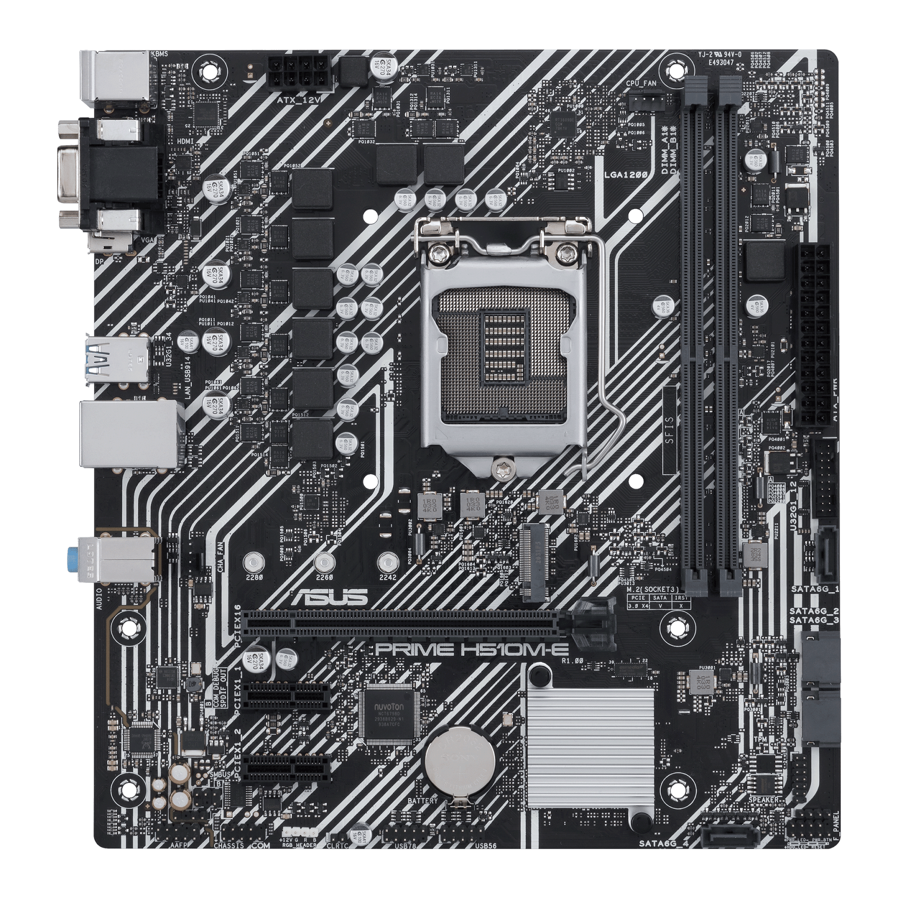
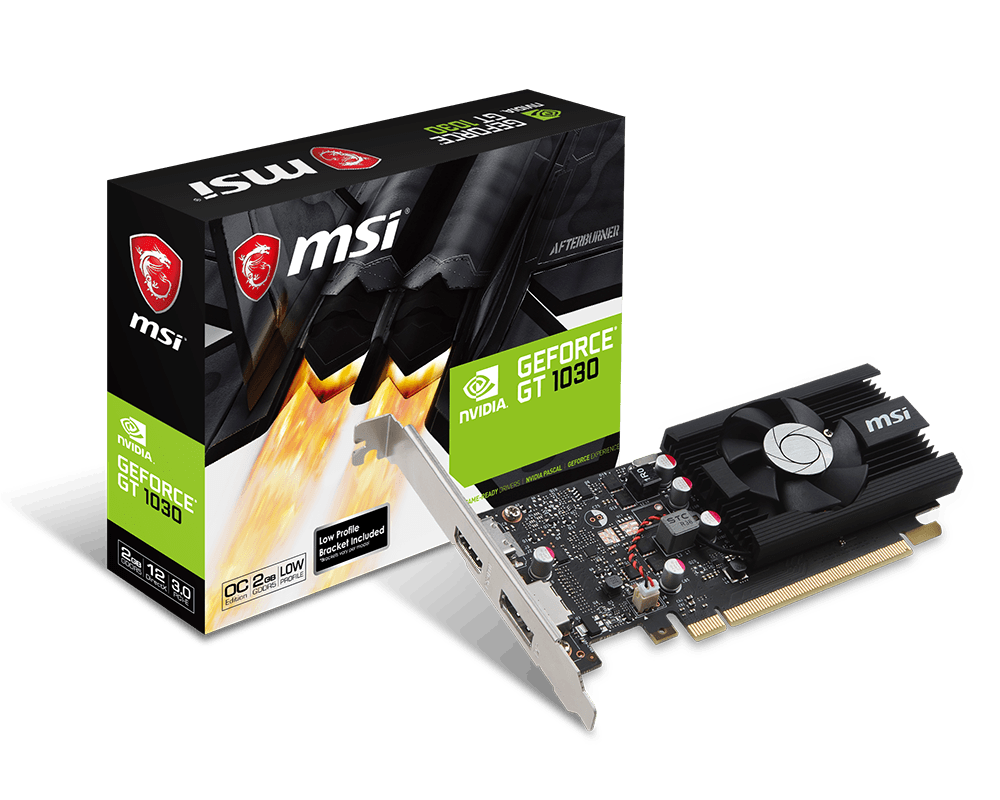

Bloque 01
Reconocimiento de una placa madre
Hacer el test de este bloque →1. Arquitectura y CPU. ¿Qué diferencias hay entre una PC de escritorio y una portátil? Mencioná dos componentes que pueden reemplazarse en cada una.
Ver respuesta orientativa
Una PC de escritorio suele usar componentes separados y ofrece más espacio para ampliaciones; una portátil integra pantalla, teclado y batería para facilitar el traslado. En una PC de escritorio pueden reemplazarse, por ejemplo, RAM y almacenamiento. En una portátil también pueden reemplazarse RAM y SSD si el modelo usa módulos y unidades extraíbles; puede tener RAM soldada. Se consulta siempre el manual.
Ampliación para esta consigna. Base conceptual relacionada: Unidad 2 · CPU · PDF p. 3
2. Placa madre y buses. ¿Qué es la placa madre y cuáles son sus funciones principales?
Ver respuesta orientativa
La placa madre es la tarjeta de circuito impreso principal que conecta los componentes de la computadora. Proporciona rutas de comunicación y distribuye la alimentación mediante sus conectores y circuitos reguladores. Aloja el socket de CPU, las ranuras RAM y de expansión, el chipset y el firmware BIOS/UEFI.
Base conceptual relacionada: Unidad 4 · Placa madre · PDF p. 8
3. RAM. ¿Qué es la memoria RAM, qué función cumple y por qué se dice que es volátil?
Ver respuesta orientativa
La RAM es la memoria de trabajo del sistema: almacena temporalmente los datos y las instrucciones de los programas en ejecución que necesita el procesador. En equipos con módulos, estos incluyen chips, contactos y una muesca de orientación. Es volátil porque pierde su contenido cuando deja de recibir alimentación.
Base conceptual relacionada: Unidad 5 · RAM · PDF p. 9
4. Almacenamiento. ¿Qué diferencias hay entre HDD y SSD? Mencioná tres.
Ver respuesta orientativa
El HDD guarda datos en platos magnéticos que giran y utiliza cabezales; el SSD usa memoria flash NAND, sin partes móviles. El SSD suele tener menor tiempo de acceso, menos ruido y mayor resistencia a golpes. El HDD suele ofrecer menor costo por GB. Ambos conservan los datos sin alimentación, pero no reemplazan una copia de seguridad.
Base conceptual relacionada: Unidad 7 · Almacenamiento · PDF p. 10
5. Expansión y conectividad. ¿Qué diferencia hay entre pantalla, GPU y tarjeta gráfica dedicada?
Ver respuesta orientativa
La pantalla muestra la imagen. La GPU es el procesador que realiza el trabajo gráfico. Una tarjeta gráfica dedicada es una placa de expansión que incorpora una GPU, normalmente VRAM propia, refrigeración y salidas de video. Una GPU también puede estar integrada en el procesador y usar parte de la RAM del equipo.
Base conceptual relacionada: Unidad 8 · Expansión · PDF p. 11
6 Práctica de aplicación
Tema Reconocimiento de una placa madre

a. Señalá el socket, las ranuras RAM, la ranura PCIe x16 y los conectores SATA.
Ver respuesta orientativa
En la fotografía, con los conectores traseros a la izquierda, el socket es el alojamiento cuadrado del procesador, en la zona superior central. Las dos ranuras DIMM largas están a su derecha; la PCIe x16 larga queda debajo del socket. Los SATA se reconocen por su forma acodada en L hacia el borde derecho/inferior. Confirmar sus rótulos con el manual P1 del anexo.
Aplicación razonada a los datos del integrador. Base relacionada: Unidad 4 · Placa madre · PDF p. 8 · Fichas del caso en el anexo
b. Indicá qué componente se conecta en cada uno y qué conector de alimentación de la placa reconocés.
Ver respuesta orientativa
En el socket se instala la CPU; en las ranuras DIMM, la RAM; en PCIe x16, una tarjeta gráfica compatible; y en SATA, el cable de datos de HDD, SSD SATA o unidad óptica. El ATX de 24 pines, junto al borde derecho, alimenta la placa madre. El conector de CPU de 8 pines está en la zona superior izquierda.
Aplicación razonada a los datos del integrador. Base relacionada: Unidad 4 · Placa madre · PDF p. 8 · Fichas del caso en el anexo
c. Antes de colocar RAM o una tarjeta, ¿qué tres datos de compatibilidad verificarías?
Ver respuesta orientativa
Para RAM verificaría generación y formato, por ejemplo DDR4 DIMM, capacidad y organización admitidas, y perfiles de tasa/voltaje compatibles. Para una tarjeta comprobaría la ranura PCIe y sus líneas, el espacio del gabinete y la potencia/conectores de la fuente. También revisaría los controladores del sistema operativo. Los requisitos de una RAM no son los mismos que los de una gráfica.
Aplicación razonada a los datos del integrador. Base relacionada: Unidad 4 · Placa madre · PDF p. 8 · Fichas del caso en el anexo
Bloque 02
CPU y placa de destino
Hacer el test de este bloque →1. Arquitectura y CPU. ¿Qué son las supercomputadoras, los servidores y las computadoras personales? Indicá un uso de cada una.
Ver respuesta orientativa
Las supercomputadoras son sistemas de gran capacidad de cálculo utilizados, por ejemplo, para simulaciones científicas. Los servidores proporcionan servicios a otros equipos, como archivos o páginas web de la escuela. Las computadoras personales están orientadas al uso individual, por ejemplo para estudiar o programar. “Servidor” describe una función: una PC también puede prestar un servicio de red.
Ampliación para esta consigna. Base conceptual relacionada: Unidad 2 · CPU · PDF p. 3
2. Placa madre y buses. ¿Qué es el chipset y qué funciones cumple?
Ver respuesta orientativa
El chipset es un conjunto de circuitos de la placa madre que participa en la comunicación con dispositivos y en las funciones disponibles, como SATA, USB y líneas PCIe. Influye en las CPU y tecnologías compatibles. En arquitecturas modernas, el controlador de RAM y algunas líneas PCIe pueden estar integrados en la CPU; no todos los datos atraviesan el chipset.
Base conceptual relacionada: Unidad 4 · Placa madre · PDF p. 8
3. RAM. Explica dos parametros de compatibilidad y dos de rendimiento
Ver respuesta orientativa
Compatibilidad: la generación de RAM debe coincidir con la admitida, por ejemplo DDR4, y el formato físico debe ser el adecuado, como DIMM o SO-DIMM. Rendimiento: la capacidad determina cuánto trabajo puede mantenerse en RAM y la tasa de transferencia indica cuántas transferencias se realizan por segundo. También importa la latencia; se compara considerando la tasa efectiva.
Base conceptual relacionada: Unidad 5 · RAM · PDF p. 9
4. Almacenamiento. ¿Qué diferencias hay entre IDE/PATA y SATA?
Ver respuesta orientativa
IDE/PATA usa transferencia paralela y cables anchos; SATA utiliza transferencia serial y cables de datos más delgados. Sus conectores no son intercambiables. PATA alcanzó hasta 133 MB/s; SATA III tiene un límite de interfaz de unos 600 MB/s, que no es la velocidad garantizada del disco. El intercambio en caliente requiere soporte de equipo, controladora y configuración.
Ampliación para esta consigna. Base conceptual relacionada: Unidad 7 · Almacenamiento · PDF p. 10
5. Expansión y conectividad. ¿Qué diferencias hay entre una GPU integrada y una dedicada?
Ver respuesta orientativa
La GPU integrada forma parte del procesador o de otro circuito integrado del sistema y habitualmente comparte RAM. Una gráfica dedicada dispone de una GPU separada y normalmente VRAM propia. Puede ofrecer más rendimiento para ciertas tareas, a cambio de costo, espacio y consumo; la comparación depende de los modelos concretos.
Base conceptual relacionada: Unidad 8 · Expansión · PDF p. 11
6 Práctica de aplicación
Tema CPU y placa de destino
Dato | Intel Core i3-10100 | Intel Core i5-12400F |
|---|---|---|
Socket | LGA1200 | LGA1700 |
Núcleos e hilos | 4 / 8 | 6 / 12 |
Memoria admitida | DDR4-2666 | DDR4-3200 o DDR5-4800 |
Gráfica integrada | UHD 630 | No tiene |
a. ¿Cuál de las dos CPU puede instalarse en esta placa? Justificá con los datos.
Ver respuesta orientativa
Puede instalarse el Intel Core i3-10100: usa LGA1200 y, según los datos del ejercicio, está admitido desde BIOS 0211, que es la instalada. El Core i5-12400F usa LGA1700 y no corresponde a ese socket. La mayor cantidad de núcleos no compensa una incompatibilidad física.
Aplicación razonada a los datos del integrador. Base relacionada: Unidad 2 · CPU · PDF p. 3 · Fichas del caso en el anexo
b. Además del socket, ¿qué se debe verificar en BIOS, RAM y refrigeración?
Ver respuesta orientativa
Confirmaría el modelo de CPU en la lista oficial y la versión de BIOS requerida; que la RAM sea DDR4 y funcione con un perfil admitido por CPU y placa; y que el disipador tenga anclaje LGA1200, capacidad térmica adecuada y espacio suficiente. También revisaría la alimentación de placa y CPU.
Aplicación razonada a los datos del integrador. Base relacionada: Unidad 2 · CPU · PDF p. 3 · Fichas del caso en el anexo
c. Si se utiliza el i5-12400F en una placa compatible, ¿qué se necesita para obtener imagen?
Ver respuesta orientativa
El i5-12400F no tiene gráfica integrada. En una placa compatible necesita una tarjeta gráfica dedicada o un dispositivo gráfico compatible para obtener imagen; el monitor debe conectarse a las salidas de esa tarjeta, no a las de la placa madre que dependen de la gráfica de la CPU.
Aplicación razonada a los datos del integrador. Base relacionada: Unidad 2 · CPU · PDF p. 3 · Fichas del caso en el anexo
Bloque 03
Lectura y comparación de procesadores
Hacer el test de este bloque →1. Arquitectura y CPU. ¿Cuáles son los componentes internos principales de una computadora? Indicá la función de cinco de ellos.
Ver respuesta orientativa
La CPU ejecuta instrucciones y operaciones; la placa madre conecta y comunica los componentes; la RAM conserva temporalmente el trabajo activo; el almacenamiento HDD/SSD conserva sistema, programas y archivos sin alimentación; y la fuente transforma corriente alterna en continua regulada. También intervienen refrigeración, gabinete y, cuando corresponde, una tarjeta gráfica dedicada.
Base conceptual relacionada: Unidad 2 · CPU · PDF p. 3
2. Placa madre y buses. ¿Qué diferencias hay entre ATX, microATX y Mini-ITX?
Ver respuesta orientativa
ATX, microATX y Mini-ITX son factores de forma que definen dimensiones y montaje. Sus tamaños de referencia son 305 × 244 mm, hasta 244 × 244 mm y 170 × 170 mm, respectivamente. Las placas pequeñas suelen ofrecer menos espacio de expansión. La cantidad real de conectores depende del modelo, y el gabinete debe admitir el formato.
Base conceptual relacionada: Unidad 4 · Placa madre · PDF p. 8
3. RAM. ¿Qué significa DDR y qué diferencia tiene con DIMM?
Ver respuesta orientativa
DDR significa Double Data Rate: realiza transferencias en ambos flancos del reloj, dos por ciclo. DIMM identifica un formato de módulo con contactos eléctricos independientes en sus dos caras. DDR describe una tecnología de memoria; DIMM, su presentación física. Por eso puede haber módulos DIMM de distintas generaciones DDR, que no son intercambiables entre sí.
Ampliación para esta consigna. Base conceptual relacionada: Unidad 5 · RAM · PDF p. 9 · Kingston · MHz y MT/s
4. Almacenamiento. Indica 4 diferencias entre HDD y SSD
Ver respuesta orientativa
1) HDD: platos magnéticos y piezas móviles; SSD: memoria flash. 2) El SSD suele tener menor latencia y mayor velocidad de acceso. 3) El HDD genera ruido mecánico; el SSD es silencioso. 4) El SSD tolera mejor los golpes durante el uso; el HDD suele resultar más económico por GB. El consumo y rendimiento exactos dependen del modelo.
Base conceptual relacionada: Unidad 7 · Almacenamiento · PDF p. 10
5. Expansión y conectividad. ¿Dónde se conecta el monitor si la PC tiene una tarjeta gráfica dedicada?
Ver respuesta orientativa
Para usar la tarjeta dedicada, conectaría el monitor a un puerto de salida de esa tarjeta, como HDMI o DisplayPort. Las salidas de la placa madre no se convierten automáticamente en salidas de la tarjeta instalada. Su funcionamiento depende de que exista una GPU integrada compatible y de la configuración del equipo.
Base conceptual relacionada: Unidad 8 · Expansión · PDF p. 11
6 Práctica de aplicación
Tema Lectura y comparación de procesadores
Parámetro | Intel Core i3-10100 | Intel Core i5-10400 |
|---|---|---|
Núcleos e hilos | 4 / 8 | 6 / 12 |
Frecuencia base | 3,60 GHz | 2,90 GHz |
Turbo máximo | 4,30 GHz | 4,30 GHz |
Caché L3 | 6 MB | 12 MB |
Socket y TDP | LGA1200 / 65 W | LGA1200 / 65 W |
a. ¿Cuál tiene más núcleos, hilos y caché? ¿Cuál tiene mayor frecuencia base?
Ver respuesta orientativa
El i5-10400 tiene más núcleos e hilos, 6/12 frente a 4/8, y más caché L3, 12 MB frente a 6 MB. El i3-10100 tiene mayor frecuencia base: 3,60 GHz frente a 2,90 GHz. Ambos anuncian hasta 4,30 GHz de turbo. Una sola cifra no resume todo su rendimiento.
Aplicación razonada a los datos del integrador. Base relacionada: Unidad 2 · CPU · PDF p. 3 · Fichas del caso en el anexo
b. Para varias aplicaciones simultáneas, ¿cuál elegirías y qué dos datos usarías para justificarlo?
Ver respuesta orientativa
Para varias aplicaciones simultáneas elegiría, entre estas opciones, el i5-10400. Sus 6 núcleos y 12 hilos ofrecen más recursos para distribuir trabajo que los 4 núcleos y 8 hilos del i3. Sus 12 MB de caché L3 también son un dato relevante. La mejora concreta dependerá de las aplicaciones y del resto del equipo.
Aplicación razonada a los datos del integrador. Base relacionada: Unidad 2 · CPU · PDF p. 3 · Fichas del caso en el anexo
c. ¿Ambas son compatibles con la placa indicada? ¿Por qué el socket no alcanza para confirmarlo?
Ver respuesta orientativa
Según los datos del ejercicio, ambas CPU usan LGA1200 y están admitidas por la ASUS PRIME H510M-E desde BIOS 0211. El socket por sí solo no basta: deben coincidir también el soporte del chipset, el firmware y los requisitos eléctricos/térmicos. Aquí se confirma la BIOS porque el caso la informa; en un equipo real se comprobaría.
Aplicación razonada a los datos del integrador. Base relacionada: Unidad 2 · CPU · PDF p. 3 · Fichas del caso en el anexo
Bloque 04
Refrigeración y espacio disponible
Hacer el test de este bloque →1. Arquitectura y CPU. ¿Cuáles son las partes de la arquitectura de Von Neumann y cómo se relacionan?
Ver respuesta orientativa
El modelo incluye CPU, memoria principal, dispositivos de entrada/salida y un sistema de interconexión. La CPU comprende unidad de control, unidad aritmético-lógica y registros. Datos e instrucciones comparten memoria. Los buses permiten buscarlos y ejecutar el ciclo de instrucción, intercambiando información con la memoria y los periféricos.
Base conceptual relacionada: Unidad 1 · Von Neumann · PDF p. 2
2. Placa madre y buses. Cuales son los parametros de un bus, como se calcula la velocidad.
Ver respuesta orientativa
Los parámetros son ancho del bus, frecuencia o tasa de transferencias, tipo serial/paralelo, ancho de banda y latencia. Para un bus paralelo ideal: MB/s = MHz × transferencias por ciclo × ancho en bits ÷ 8. Ejemplo: 100 MHz × 2 × 64 ÷ 8 = 1600 MB/s. En enlaces seriales se consideran además líneas, codificación y sobrecarga; no basta aplicar esa fórmula sin adaptar el modelo.
Ampliación para esta consigna. Base conceptual relacionada: Unidad 3 · Buses · PDF p. 4
3. RAM. ¿Qué diferencias hay entre SIMM, DIMM y SO-DIMM?
Ver respuesta orientativa
SIMM es un formato antiguo con contactos de ambas caras eléctricamente unidos. DIMM tiene contactos independientes en ambas caras y es habitual en equipos de escritorio. SO-DIMM es un formato más compacto usado en muchas portátiles. El formato no determina por sí solo la generación DDR; hay que comprobar ambos y no forzar módulos en ranuras distintas.
Ampliación para esta consigna. Base conceptual relacionada: Unidad 5 · RAM · PDF p. 9
4. Almacenamiento. Explica las interfases de comunicacion para M.2
Ver respuesta orientativa
M.2 es un formato y una especificación de conexión; no identifica una única interfaz de almacenamiento. Un SSD M.2 puede usar SATA, normalmente con AHCI, o PCIe con NVMe. Deben coincidir el protocolo admitido por la placa, la llave del conector y el tamaño, por ejemplo 2280. Que entre físicamente no confirma que funcione.
Base conceptual relacionada: Unidad 7 · Almacenamiento · PDF p. 10
5. Expansión y conectividad. ¿Qué diferencia hay entre memoria gráfica dedicada y memoria compartida?
Ver respuesta orientativa
La memoria gráfica dedicada es la VRAM asociada a una GPU, disponible para sus datos gráficos. La memoria compartida es una parte de la RAM del sistema que puede usar la GPU. Compartir memoria reduce la RAM disponible para otras tareas y tiene características de acceso diferentes. No debe sumarse memoria compartida como si fuera VRAM dedicada equivalente.
Base conceptual relacionada: Unidad 8 · Expansión · PDF p. 11
6 Práctica de aplicación
Tema Refrigeración y espacio disponible
Dato del material | Especificación |
|---|---|
CPU | Intel Core i5-10400, LGA1200, TDP 65 W |
Disipador | Noctua NH-U12S redux |
Anclajes relevantes | LGA1200 y LGA1700 con kit adecuado |
Altura con ventilador | 158 mm |
Gabinete del caso | Admite disipadores de hasta 150 mm |
a. ¿El disipador admite el socket de esta CPU? ¿Puede cerrarse el gabinete con este conjunto?
Ver respuesta orientativa
El disipador admite LGA1200 si se dispone del kit correcto, por lo que el anclaje puede ser compatible. Sin embargo, no cabe según el caso: mide 158 mm y el gabinete admite hasta 150 mm, una diferencia de 8 mm. No debe forzarse el cierre; hace falta otro disipador o un gabinete con espacio suficiente.
Aplicación razonada a los datos del integrador. Base relacionada: Unidad 6 · Mantenimiento y ESD · PDF p. 9 · Fichas del caso en el anexo
b. ¿Qué datos revisarías para elegir otro disipador compatible?
Ver respuesta orientativa
Revisaría socket y kit de montaje, compatibilidad térmica con el i5-10400, altura total no mayor que el límite del gabinete y espacio con RAM y otros componentes. La coincidencia del socket y un valor de TDP aislado no garantizan que el conjunto sea adecuado; consultaría la compatibilidad y las medidas del fabricante.
Aplicación razonada a los datos del integrador. Base relacionada: Unidad 6 · Mantenimiento y ESD · PDF p. 9 · Fichas del caso en el anexo
c. Indicá dónde conectar el ventilador y qué comprobar después del montaje.
Ver respuesta orientativa
El ventilador del disipador se conecta a CPU_FAN. Después revisaría fijación, interfaz térmica y cables libres de las aspas; al encender, comprobaría giro y lectura de RPM. Controlaría temperaturas en reposo y carga frente a las especificaciones de esa CPU y su comportamiento, sin tomar el límite Tjunction como temperatura objetivo.
Aplicación razonada a los datos del integrador. Base relacionada: Unidad 6 · Mantenimiento y ESD · PDF p. 9 · Fichas del caso en el anexo
Bloque 05
RAM y formato de la ranura
Hacer el test de este bloque →1. Arquitectura y CPU. ¿Qué es el ciclo de instrucción? Describí brevemente sus etapas.
Ver respuesta orientativa
El ciclo de instrucción comprende Fetch, Decode y Execute. En Fetch se busca la instrucción en memoria; en Decode la unidad de control interpreta qué operación corresponde y qué datos necesita; en Execute se realiza la operación y se actualiza el estado o resultado. Es un modelo básico: las CPU modernas pueden solapar etapas y ejecutar varias operaciones.
Base conceptual relacionada: Unidad 1 · Von Neumann · PDF p. 2
2. Placa madre y buses. ¿Qué dispositivos se conectan en PCI, AGP y PCIe?Son de transferencia serial o paralela?
Ver respuesta orientativa
PCI es un bus paralelo antiguo para tarjetas de red, sonido y otras expansiones. AGP es una interfaz paralela antigua dedicada a gráficas. PCIe usa enlaces seriales por líneas y conecta gráficas, tarjetas de red, sonido, controladoras y SSD NVMe. Sus ranuras y funcionamiento son diferentes; una tarjeta PCI o AGP no se instala directamente en PCIe.
Ampliación para esta consigna. Base conceptual relacionada: PCIe · PDF p. 5
3. RAM. ¿Por qué una memoria DDR4 no puede colocarse en una ranura DDR3?
Ver respuesta orientativa
DDR4 y DDR3 difieren en características eléctricas, señalización, posición de la muesca y contactos. Por ejemplo, los DIMM de escritorio DDR3 usan 240 contactos y los DDR4, 288. La placa y el controlador de memoria deben admitir la generación. No se soluciona haciendo fuerza ni cambiando una opción del sistema operativo.
Base conceptual relacionada: Unidad 5 · RAM · PDF p. 9
4. Almacenamiento. ¿Qué diferencia hay entre M.2, SATA y NVMe?
Ver respuesta orientativa
M.2 describe el formato/conexión física; SATA es una interfaz de almacenamiento; NVMe es un protocolo para almacenamiento sobre PCIe. Existen SSD de 2,5 pulgadas SATA, M.2 SATA y M.2 PCIe/NVMe. Por eso “M.2” no significa automáticamente “NVMe” ni permite afirmar que toda unidad M.2 es más rápida que una SATA.
Base conceptual relacionada: Unidad 7 · Almacenamiento · PDF p. 10 · Kingston · SATA, M.2 y NVMe
5. Expansión y conectividad. ¿Cómo podés averiguar si la gráfica está integrada y si puede reemplazarse?
Ver respuesta orientativa
Consultaría el modelo de CPU y la documentación del equipo; también el Administrador de dispositivos, herramientas de información o la inspección de la placa. Una GPU integrada en la CPU no suele reemplazarse por separado. Una tarjeta dedicada de escritorio puede cambiarse si es compatible; en portátiles puede estar soldada y debe consultarse el diseño concreto.
Base conceptual relacionada: Unidad 8 · Expansión · PDF p. 11
6 Práctica de aplicación
Tema RAM y formato de la ranura
Parámetro | Kingston KVR32N22S8/8 | Kingston KVR32S22S8/8 |
|---|---|---|
Capacidad y tecnología | 8 GB DDR4 | 8 GB DDR4 |
Formato | DIMM, 288 contactos | SO-DIMM, 260 contactos |
Tasa nominal y CL | 3200 MT/s / CL22 | 3200 MT/s / CL22 |
Voltaje | 1,2 V | 1,2 V |
a. ¿Cuál módulo corresponde a estas ranuras? Marcá los datos que lo demuestran.
Ver respuesta orientativa
Corresponde el Kingston KVR32N22S8/8: 8 GB DDR4, DIMM de 288 contactos, no ECC y sin búfer según el anexo. Coincide con las ranuras y con la capacidad admitida del caso. El número de parte permite distinguirlo del SO-DIMM aunque ambos indiquen 8 GB y DDR4.
Aplicación razonada a los datos del integrador. Base relacionada: Unidad 5 · RAM · PDF p. 9 · Kingston · SATA, M.2 y NVMe · Fichas del caso en el anexo
b. ¿Por qué el otro no sirve aunque tenga la misma capacidad y sea DDR4?
Ver respuesta orientativa
El KVR32S22S8/8 es SO-DIMM de 260 contactos; la placa usa DIMM de 288. Difieren el tamaño, la conexión y la ubicación de la muesca. Igual capacidad, tecnología y tasa nominal no lo vuelven físicamente intercambiable. No puede instalarse directamente en esa ranura DIMM.
Aplicación razonada a los datos del integrador. Base relacionada: Unidad 5 · RAM · PDF p. 9 · Kingston · SATA, M.2 y NVMe · Fichas del caso en el anexo
c. Indicá qué otros datos revisarías antes de comprar o instalar el módulo.
Ver respuesta orientativa
Además del formato y la generación, comprobaría capacidad máxima por ranura y total, organización y soporte ECC/registro, tensión, perfiles de tasa y latencia compatibles con CPU y placa, BIOS y ranuras libres. Si se combinará con otra RAM, revisaría sus características y la lista de compatibilidad del fabricante cuando esté disponible.
Aplicación razonada a los datos del integrador. Base relacionada: Unidad 5 · RAM · PDF p. 9 · Kingston · SATA, M.2 y NVMe · Fichas del caso en el anexo
Bloque 06
Ampliación de RAM con datos dados
Hacer el test de este bloque →1. Arquitectura y CPU. ¿Qué función cumplen los buses de datos, direcciones y control?
Ver respuesta orientativa
El bus de datos transporta los datos e instrucciones que se intercambian. El bus de direcciones identifica la posición de memoria o el recurso al que se accede. El bus de control transporta señales para coordinar las operaciones, por ejemplo lectura, escritura e interrupciones. La distinción es funcional; una interconexión moderna no siempre usa tres grupos físicos separados.
Ampliación para esta consigna. Base conceptual relacionada: Unidad 3 · Buses · PDF p. 4
2. Placa madre y buses. ¿Qué significan x1, x4, x8 y x16 en PCIe?
Ver respuesta orientativa
x1, x4, x8 y x16 indican la cantidad de líneas o lanes PCIe del enlace. Más líneas permiten más ancho de banda dentro de una misma generación. Una ranura de largo x16 puede estar cableada eléctricamente como x4: deben verificarse tanto el formato físico como las líneas disponibles y su reparto con otros dispositivos.
Base conceptual relacionada: PCIe · PDF p. 5
3. RAM. ¿Qué parámetros de compatibilidad se verifican antes de comprar RAM?
Ver respuesta orientativa
Verificaría generación DDR, formato DIMM/SO-DIMM, capacidad por módulo y total, tensión, organización, soporte ECC o sin ECC y con o sin registro, perfiles de tasa admitidos por CPU y placa, BIOS y ranuras libres. La RAM elegida debe satisfacer todos los requisitos relevantes; no basta comparar su capacidad en GB.
Base conceptual relacionada: Unidad 5 · RAM · PDF p. 9
4. Almacenamiento. ¿Qué se debe verificar para instalar un SSD M.2 en una placa madre?
Ver respuesta orientativa
Verificaría que exista una ranura M.2 para almacenamiento, no únicamente una de Wi-Fi; el protocolo SATA o PCIe/NVMe admitido; llave y largo, por ejemplo 2280; espacio y fijación; versión y líneas PCIe; soporte de arranque del firmware si se usará como disco del sistema; y posibles puertos compartidos según el manual.
Base conceptual relacionada: Unidad 7 · Almacenamiento · PDF p. 10 · Kingston · SATA, M.2 y NVMe
5. Expansión y conectividad. ¿Qué funciones cumplen las tarjetas de red y de sonido?
Ver respuesta orientativa
La tarjeta de red permite conectar la computadora a una red, por ejemplo mediante Ethernet o Wi-Fi. La tarjeta de sonido procesa audio y ofrece entradas/salidas para micrófonos, auriculares o altavoces. Pueden estar integradas en la placa o añadirse como expansión. Los controladores permiten que el sistema operativo las utilice.
Base conceptual relacionada: Unidad 8 · Expansión · PDF p. 11
6 Práctica de aplicación
Tema Ampliación de RAM con datos dados
Dato | Equipo del caso |
|---|---|
Placa | ASUS PRIME H510M-E |
Ranuras y límite | 2 DIMM DDR4 / 64 GB totales / dual channel |
RAM instalada | 1 Kingston KVR32N22S8/8 de 8 GB |
Módulo propuesto A | Otro KVR32N22S8/8, 8 GB DIMM DDR4 |
Módulo propuesto B | KVR32S22S8/8, 8 GB SO-DIMM DDR4 |
a. ¿Cuál módulo agregarías y por qué? ¿Cuánta RAM quedaría instalada?
Ver respuesta orientativa
Agregaría el módulo A, otro KVR32N22S8/8 de 8 GB DDR4 DIMM, porque coincide con el formato y el módulo que ya funciona y el caso informa una ranura libre. Quedarían 16 GB, dentro del límite total de 64 GB. El módulo B es SO-DIMM y no corresponde a las ranuras de esa placa.
Aplicación razonada a los datos del integrador. Base relacionada: Unidad 5 · RAM · PDF p. 9 · Kingston · SATA, M.2 y NVMe · Fichas del caso en el anexo
b. ¿Qué ventaja ofrece usar dos módulos iguales en una placa que admite dual channel?
Ver respuesta orientativa
Dos módulos iguales favorecen una configuración de dos canales equilibrada: el controlador puede acceder a ambos canales y aumentar el ancho de banda disponible. No duplica la capacidad de cada módulo ni garantiza duplicar el rendimiento de todas las aplicaciones. Deben seguirse la distribución de ranuras y las indicaciones del manual.
Aplicación razonada a los datos del integrador. Base relacionada: Unidad 5 · RAM · PDF p. 9 · Kingston · SATA, M.2 y NVMe · Fichas del caso en el anexo
c. ¿Cómo comprobarías que la ampliación fue reconocida y funciona sin errores?
Ver respuesta orientativa
Comprobaría que BIOS/UEFI y el sistema operativo detecten los 16 GB y una configuración estable. Consultaría los canales con una herramienta adecuada y ejecutaría MemTest86+ o un diagnóstico de memoria. Si aparecen errores, probaría módulos por separado y en distintas ranuras antes de atribuirlos a una pieza.
Aplicación razonada a los datos del integrador. Base relacionada: Unidad 5 · RAM · PDF p. 9 · Kingston · SATA, M.2 y NVMe · Fichas del caso en el anexo
Bloque 07
Velocidad nominal y velocidad admitida
Hacer el test de este bloque →1. Arquitectura y CPU. ¿Qué diferencia hay entre un bus serial y uno paralelo? Dá un ejemplo de cada uno.
Ver respuesta orientativa
Una conexión serial envía una secuencia de bits por cada línea; una paralela transmite varios bits simultáneamente por varias líneas. SATA o PCIe son ejemplos seriales; PATA o PCI convencional, paralelos. Serial no significa necesariamente lento: las altas tasas de señalización y múltiples líneas de PCIe permiten grandes anchos de banda.
Base conceptual relacionada: Unidad 3 · Buses · PDF p. 4
2. Placa madre y buses. ¿Puede colocarse una tarjeta PCIe x8 en una ranura x16? ¿Qué debe verificarse?
Ver respuesta orientativa
En general, una tarjeta PCIe x8 puede instalarse en una ranura física x16 compatible. Verificaría que la ranura tenga líneas activas suficientes para el funcionamiento requerido, la generación negociada, el soporte de placa/firmware, alimentación, espacio y controladores. La longitud x16 no asegura que el enlace esté cableado eléctricamente a x16.
Ampliación para esta consigna. Base conceptual relacionada: PCIe · PDF p. 5
3. RAM. ¿Qué diferencia hay entre capacidad instalada y capacidad máxima de RAM?
Ver respuesta orientativa
La capacidad instalada es la suma de RAM físicamente montada y reconocida. La capacidad máxima es el límite que admite el conjunto de placa, CPU y configuración; también puede existir un límite por ranura. El sistema operativo y la RAM reservada para hardware influyen en la memoria utilizable. Tener ranuras libres no autoriza superar esos límites.
Base conceptual relacionada: Unidad 5 · RAM · PDF p. 9
4. Almacenamiento. ¿Qué datos necesitás para reemplazar el disco de una notebook por un SSD?
Ver respuesta orientativa
Necesitaría modelo exacto de notebook, tipo de conexión y unidad instalada, formato y altura disponible, capacidad requerida, fijaciones y soporte de arranque. Si usa bahía SATA de 2,5 pulgadas, corresponde un SSD SATA compatible, no cualquier M.2. Antes del reemplazo realizaría y verificaría un respaldo y decidiría si se clonará o reinstalará el sistema.
Base conceptual relacionada: Unidad 7 · Almacenamiento · PDF p. 10
5. Expansión y conectividad. ¿Una tarjeta PCIe de escritorio puede colocarse directamente en una portátil? Justificá.
Ver respuesta orientativa
No directamente: una tarjeta PCIe de escritorio necesita una ranura y espacio adecuados, además de alimentación y refrigeración. Las portátiles normalmente no disponen de esa ranura de expansión en formato de escritorio. Existen soluciones específicas, pero dependen del modelo y de una conexión compatible; un conector M.2 de notebook no equivale a una ranura x16 para esa tarjeta.
Base conceptual relacionada: Unidad 8 · Expansión · PDF p. 11
6 Práctica de aplicación
Tema Velocidad nominal y velocidad admitida
Dato | Valor |
|---|---|
Módulo | Kingston KVR32N22S8/8, DDR4 DIMM |
Capacidad y tasa nominal | 8 GB / 3200 MT/s |
Latencia y voltaje | CL22 / 1,2 V |
CPU del equipo | Intel Core i3-10100 |
Límite nativo CPU y placa del caso | DDR4 hasta 2666 MT/s |
a. Señalá capacidad, tasa de transferencia y latencia en la tabla. ¿Qué informa cada dato?
Ver respuesta orientativa
La capacidad es 8 GB: cantidad de memoria del módulo. La tasa nominal es 3200 MT/s: millones de transferencias por segundo. CL22 es la latencia CAS expresada en ciclos de reloj; no son 22 nanosegundos. El tiempo correspondiente a esos ciclos depende de la frecuencia a la que esté funcionando.
Aplicación razonada a los datos del integrador. Base relacionada: Unidad 5 · RAM · PDF p. 9 · Fichas del caso en el anexo
b. ¿El rótulo 3200 MT/s garantiza que funcione a esa tasa en este equipo? Justificá.
Ver respuesta orientativa
No. En el caso, CPU y placa limitan de forma nativa la memoria a 2666 MT/s. El conjunto funcionará con un perfil común admitido por módulo, controlador y placa, dentro de ese límite. Debe verificarse el perfil realmente seleccionado; el rótulo de 3200 MT/s no fuerza esa tasa en cualquier equipo.
Aplicación razonada a los datos del integrador. Base relacionada: Unidad 5 · RAM · PDF p. 9 · Kingston · MHz y MT/s · Fichas del caso en el anexo
c. Antes de mezclar otro módulo, ¿qué tres parámetros comprobarías?
Ver respuesta orientativa
Como mínimo comprobaría: 1) misma generación y formato, DDR4 DIMM; 2) tensión y perfiles de tasa/temporización comunes; 3) capacidad y organización admitidas por ranura y por el controlador. Después revisaría si puede mantenerse una configuración de canales adecuada y realizaría una prueba de estabilidad. Igual velocidad impresa no asegura igual compatibilidad.
Aplicación razonada a los datos del integrador. Base relacionada: Unidad 5 · RAM · PDF p. 9 · Fichas del caso en el anexo
Bloque 08
Diagnóstico de RAM después de instalarla
Hacer el test de este bloque →1. Arquitectura y CPU. ¿Qué es el procesador y cuáles son sus partes principales?
Ver respuesta orientativa
El procesador es un circuito integrado de silicio que ejecuta instrucciones y realiza operaciones de cálculo y control. Sus partes funcionales incluyen unidad de control, unidad aritmético-lógica y registros; las CPU actuales integran núcleos y varios niveles de caché. No debe confundirse el procesador con todo el gabinete de la computadora.
Ampliación para esta consigna. Base conceptual relacionada: Unidad 2 · CPU · PDF p. 3
2. Placa madre y buses. ¿Puede funcionar una tarjeta PCIe 5.0 en una ranura PCIe 4.0? Justificá.
Ver respuesta orientativa
En general sí, por la compatibilidad entre generaciones PCIe. El enlace negocia una generación y una cantidad de líneas admitidas por ambos extremos; en ese caso no excederá PCIe 4.0. Deben verificarse además la ranura física, el firmware, la fuente, el espacio y los controladores. No implica obtener el rendimiento máximo PCIe 5.0.
Base conceptual relacionada: PCIe · PDF p. 5 · Intel · Compatibilidad PCIe entre generaciones
3. RAM. ¿Qué componentes determinan el tipo y la capacidad de RAM admitidos?
Ver respuesta orientativa
El controlador de memoria de la CPU y la placa madre determinan generaciones, organización, cantidad de canales, ranuras y capacidades soportadas; la BIOS también influye en el reconocimiento. El sistema operativo puede limitar la cantidad utilizable. Deben respetarse tanto el máximo por ranura como el total del conjunto.
Base conceptual relacionada: Unidad 5 · RAM · PDF p. 9
4. Almacenamiento. ¿Qué diferencia hay entre velocidad de lectura y estado de salud de un disco?
Ver respuesta orientativa
La velocidad de lectura mide cuántos datos puede entregar la unidad por segundo, por ejemplo en MB/s y bajo ciertas condiciones. La salud describe su estado, desgaste, errores y riesgos de funcionamiento. Una ficha rápida no acredita buena salud; una transferencia lenta tampoco demuestra por sí sola daño. Se requieren mediciones e información de diagnóstico.
Base conceptual relacionada: Unidad 7 · Almacenamiento · PDF p. 10
5. Expansión y conectividad. ¿Qué diferencia hay entre Wi-Fi e Internet?
Ver respuesta orientativa
Wi-Fi es una forma de conectar dispositivos de manera inalámbrica a una red local. Internet es una red mundial de redes a la que esa red local puede tener salida. Es posible estar conectado por Wi-Fi y acceder al servidor escolar sin tener Internet; también puede usarse Internet por Ethernet sin utilizar Wi-Fi.
Ampliación para esta consigna. Base conceptual relacionada: Unidad 8 · Expansión · PDF p. 11
6 Práctica de aplicación
Tema Diagnóstico de RAM después de instalarla
Material del caso | Dato |
|---|---|
Placa | DIMM DDR4; admite módulos de 8 GB |
Módulo A | 8 GB DDR4 DIMM de 288 contactos |
Módulo B | 8 GB DDR4 SO-DIMM de 260 contactos |
Síntoma planteado | Después de agregar RAM, el equipo enciende sin imagen |
a. ¿Cuál módulo corresponde a la placa? ¿Qué dato descarta al otro?
Ver respuesta orientativa
Corresponde el módulo A: 8 GB DDR4 DIMM de 288 contactos. La placa admite ese formato y capacidad. El módulo B se descarta por ser SO-DIMM de 260 contactos. La falta de imagen después de una ampliación no basta para afirmar que la memoria está dañada.
Aplicación razonada a los datos del integrador. Base relacionada: Unidad 6 · Mantenimiento y ESD · PDF p. 9 · Fichas del caso en el anexo
b. Ordená tres comprobaciones antes de concluir que la memoria está dañada.
Ver respuesta orientativa
1) Apagar, desconectar la alimentación y aplicar protección ESD; revisar formato, tipo y capacidad admitidos. 2) Comprobar que el módulo esté orientado y completamente insertado, con trabas cerradas. 3) Probar el módulo anterior y luego cada módulo por separado en las ranuras permitidas por el manual. Registrar qué combinación arranca.
Aplicación razonada a los datos del integrador. Base relacionada: Unidad 6 · Mantenimiento y ESD · PDF p. 9 · Fichas del caso en el anexo
c. ¿Qué prueba usarías para detectar errores y cómo distinguirías una falla del módulo de una de la ranura?
Ver respuesta orientativa
Usaría MemTest86+ o el diagnóstico de memoria, cuando el equipo permita iniciar esa prueba. Probaría el módulo sospechoso en una ranura que funciona y un módulo compatible conocido como bueno en la ranura sospechosa. Si el fallo sigue al módulo, sospecharía de él; si sigue a la ranura, de la ranura, placa o controlador. Los resultados todavía deben verificarse.
Aplicación razonada a los datos del integrador. Base relacionada: Unidad 6 · Mantenimiento y ESD · PDF p. 9 · Fichas del caso en el anexo
Bloque 09
SSD y conexión disponible
Hacer el test de este bloque →1. Arquitectura y CPU. ¿Qué es un núcleo y qué es un hilo de procesamiento?
Ver respuesta orientativa
Un núcleo es una unidad física de ejecución dentro de la CPU. Un hilo es una secuencia de instrucciones que puede programarse para ejecución; con SMT, un núcleo puede ofrecer más de un procesador lógico. Dos hilos lógicos comparten recursos del núcleo y no equivalen a dos núcleos físicos completos.
Ampliación para esta consigna. Base conceptual relacionada: Unidad 2 · CPU · PDF p. 3
2. Placa madre y buses. ¿Qué diferencia hay entre frecuencia y velocidad de transferencia? Indicá sus unidades.
Ver respuesta orientativa
La frecuencia indica ciclos por segundo y se expresa en Hz, MHz o GHz. Una tasa de transferencia indica transferencias por segundo, como MT/s, o volumen de datos por tiempo, como MB/s o Gb/s. Para relacionarlas hay que conocer datos por transferencia, transferencias por ciclo y sobrecarga. Debe distinguirse b de bit y B de byte.
Base conceptual relacionada: Unidad 3 · Buses · PDF p. 4
3. RAM. ¿Qué diferencia hay entre MHz y MT/s al describir una memoria DDR?
Ver respuesta orientativa
MHz expresa millones de ciclos de reloj por segundo; MT/s, millones de transferencias por segundo. En DDR se realizan dos transferencias por ciclo: una memoria a 1600 MHz de reloj puede ofrecer 3200 MT/s. Por eso DDR4-3200 se expresa con precisión como 3200 MT/s, no como 3200 MHz de reloj físico.
Ampliación para esta consigna. Base conceptual relacionada: Unidad 5 · RAM · PDF p. 9 · Kingston · MHz y MT/s
4. Almacenamiento. ¿Qué es S.M.A.R.T. y qué información permite consultar?
Ver respuesta orientativa
S.M.A.R.T. es un sistema de supervisión interna de unidades de almacenamiento. Según el modelo permite consultar temperatura, horas de uso, errores y atributos de desgaste o salud; en HDD, por ejemplo, sectores reasignados, y en SSD, indicadores de vida utilizada. No garantiza predecir todas las fallas y no reemplaza un respaldo.
Ampliación para esta consigna. Base conceptual relacionada: Unidad 7 · Almacenamiento · PDF p. 10 · smartmontools · Manual de smartctl
5. Expansión y conectividad. ¿Qué diferencias hay entre una conexión Wi-Fi y una Ethernet?
Ver respuesta orientativa
Wi-Fi utiliza radio y facilita movilidad; su rendimiento puede variar con distancia, obstáculos e interferencias. Ethernet usa cable de red y normalmente ofrece un enlace más estable y predecible. La velocidad concreta depende del estándar, equipos y condiciones. Ambas permiten redes locales con o sin salida a Internet.
Ampliación para esta consigna. Base conceptual relacionada: Unidad 8 · Expansión · PDF p. 11
6 Práctica de aplicación
Tema SSD y conexión disponible
Parámetro | Kingston A400 SA400S37/480G | Kingston NV2 SNV2S/500G |
|---|---|---|
Capacidad | 480 GB | 500 GB |
Formato | 2,5 pulgadas, 7 mm | M.2 2280 |
Interfaz | SATA 6 Gb/s | PCIe 4.0 x4 NVMe |
Lectura / escritura anunciadas | Hasta 500 / 450 MB/s | Hasta 3500 / 2100 MB/s |
a. ¿Cuál SSD puede conectarse directamente? Indicá los datos de compatibilidad.
Ver respuesta orientativa
El Kingston A400 SA400S37/480G puede conectarse directamente: es SATA de 2,5 pulgadas y 7 mm, compatible con la bahía y las conexiones informadas. Tiene 480 GB. También verificaría fijación y espacio real, pero el formato y la interfaz coinciden con las condiciones del caso.
Aplicación razonada a los datos del integrador. Base relacionada: Unidad 7 · Almacenamiento · PDF p. 10 · Fichas del caso en el anexo
b. ¿Por qué el SSD más rápido de la tabla no es una opción directa para este equipo?
Ver respuesta orientativa
El NV2 SNV2S/500G es M.2 2280 PCIe/NVMe. El equipo no tiene ranura M.2 ni adaptador adicional; disponer de una bahía SATA no permite conectarlo directamente. Su lectura anunciada de hasta 3500 MB/s no elimina la incompatibilidad de conexión.
Aplicación razonada a los datos del integrador. Base relacionada: Unidad 7 · Almacenamiento · PDF p. 10 · Fichas del caso en el anexo
c. ¿Qué dos conexiones necesita el SSD elegido y qué comprobarías antes de reemplazar el disco?
Ver respuesta orientativa
El A400 requiere conexión SATA de datos y SATA de alimentación, que en una notebook pueden formar un conector combinado o caddy. Antes verificaría formato, altura, capacidad suficiente, respaldo y estrategia de migración. Después comprobaría detección, arranque y archivos. No debe manipularse con el equipo alimentado en este procedimiento de taller.
Aplicación razonada a los datos del integrador. Base relacionada: Unidad 7 · Almacenamiento · PDF p. 10 · Fichas del caso en el anexo
Bloque 10
M2 no garantiza compatibilidad
Hacer el test de este bloque →1. Arquitectura y CPU. ¿Qué son los registros y la memoria caché? ¿Para qué sirven?
Ver respuesta orientativa
Los registros son pequeñas ubicaciones de almacenamiento de acceso muy rápido dentro de la CPU para operandos, direcciones y estado inmediato de ejecución. La caché guarda copias de datos e instrucciones de uso frecuente o reciente para reducir accesos a RAM. Ambos aceleran el procesamiento, con tamaños y funciones distintos.
Ampliación para esta consigna. Base conceptual relacionada: Unidad 2 · CPU · PDF p. 3
2. Placa madre y buses. ¿Qué componentes se conectan mediante PCIe, SATA y USB?
Ver respuesta orientativa
PCIe conecta tarjetas gráficas, de red, de sonido, controladoras y SSD NVMe. SATA conecta HDD, SSD SATA y unidades ópticas. USB conecta periféricos externos como teclado, mouse, impresora o almacenamiento externo. La conexión elegida depende de las interfaces del dispositivo y del equipo; el parecido físico de un conector no basta.
Base conceptual relacionada: Unidad 3 · Buses · PDF p. 4
3. RAM. ¿Qué datos informa la etiqueta de un módulo RAM? Mencioná cuatro.
Ver respuesta orientativa
Puede informar número de parte, capacidad, generación DDR, tasa nominal, latencia y tensión, aunque no todas las etiquetas muestran todos esos datos. Por ejemplo, 8 GB, DDR4, 3200 MT/s y CL22 son cuatro características distintas. El número de parte sirve para consultar formato, organización y detalles no impresos en la etiqueta.
Base conceptual relacionada: Unidad 5 · RAM · PDF p. 9
4. Almacenamiento. ¿Qué diferencia hay entre disco, partición y sistema de archivos?
Ver respuesta orientativa
El disco o unidad es el dispositivo físico de almacenamiento, HDD o SSD. Una partición es una división lógica del espacio de esa unidad. Un sistema de archivos, como NTFS o ext4, organiza archivos, directorios y metadatos dentro de un volumen. Una misma unidad puede contener varias particiones con sistemas de archivos diferentes.
Ampliación para esta consigna. Base conceptual relacionada: Unidad 7 · Almacenamiento · PDF p. 10 · Kingston · SATA, M.2 y NVMe
5. Expansión y conectividad. ¿Para qué sirve Bluetooth? Mencioná dos dispositivos que lo utilicen.
Ver respuesta orientativa
Bluetooth es una tecnología de comunicación inalámbrica de corto alcance para enlazar dispositivos. Puede usarse con auriculares y mouse, por ejemplo. Requiere un adaptador Bluetooth compatible y, normalmente, emparejamiento. No es lo mismo que Wi-Fi ni implica disponer de acceso a Internet.
Ampliación para esta consigna. Base conceptual relacionada: Unidad 8 · Expansión · PDF p. 11
6 Práctica de aplicación
Tema M2 no garantiza compatibilidad
Parámetro | Kingston NV2 SNV2S/500G | Kingston NV2 SNV2S/250G |
|---|---|---|
Formato | M.2 2280 | M.2 2280 |
Interfaz y protocolo | PCIe 4.0 x4 NVMe | PCIe 4.0 x4 NVMe |
Capacidad | 500 GB | 250 GB |
Lectura / escritura anunciadas | 3500 / 2100 MB/s | 3000 / 1300 MB/s |
a. ¿Puede instalarse directamente alguno de estos SSD en esa ranura? Justificá.
Ver respuesta orientativa
Ninguno puede instalarse directamente como unidad funcional en la ranura dada: los dos SSD de la tabla son PCIe/NVMe, mientras que esa ranura M.2 2280 admite solamente SATA. Coincide el largo, pero no la interfaz/protocolo soportado. El formato físico no convierte un SSD NVMe en SATA.
Aplicación razonada a los datos del integrador. Base relacionada: Unidad 7 · Almacenamiento · PDF p. 10 · Kingston · SATA, M.2 y NVMe · Fichas del caso en el anexo
b. ¿Qué característica debería tener el SSD que se conecte a ese equipo?
Ver respuesta orientativa
Debería ser un SSD M.2 SATA de tamaño 2280 y con la llave física admitida por esa ranura y el fabricante del equipo. También verificaría fijación, espesor y soporte del firmware. Un SSD SATA de 2,5 pulgadas tampoco se instala dentro de una ranura M.2 por el solo hecho de utilizar SATA.
Aplicación razonada a los datos del integrador. Base relacionada: Unidad 7 · Almacenamiento · PDF p. 10 · Kingston · SATA, M.2 y NVMe · Fichas del caso en el anexo
c. Si la ranura admitiera NVMe, ¿qué diferencias de capacidad y rendimiento muestran los dos modelos?
Ver respuesta orientativa
El de 500 GB ofrece el doble de capacidad nominal que el de 250 GB. Sus velocidades anunciadas son 3500/2100 MB/s de lectura/escritura frente a 3000/1300 MB/s. Son valores de ficha, no mediciones de ese equipo; el rendimiento real depende del enlace, la carga y las condiciones de la unidad.
Aplicación razonada a los datos del integrador. Base relacionada: Unidad 7 · Almacenamiento · PDF p. 10 · Kingston · SATA, M.2 y NVMe · Fichas del caso en el anexo
Bloque 11
Especificaciones y salud de un SSD
Hacer el test de este bloque →1. Arquitectura y CPU. ¿Qué son las memorias caché L1, L2 y L3? ¿Dónde se encuentran?
Ver respuesta orientativa
L1, L2 y L3 son niveles de caché integrados en el procesador. Habitualmente L1 es la menor y más cercana a las unidades de ejecución; L2 es mayor y algo más lenta; L3 suele ser mayor y compartida entre varios núcleos. La distribución exacta depende de la arquitectura. Ayudan a reducir accesos a la RAM.
Base conceptual relacionada: Unidad 2 · CPU · PDF p. 3
2. Placa madre y buses. ¿Para qué sirven el conector ATX principal y el conector de alimentación de la CPU?
Ver respuesta orientativa
El conector ATX principal, normalmente de 24 pines, lleva alimentación a la placa madre. El conector EPS/ATX12V de CPU, de 4 u 8 pines según el equipo, suministra energía a sus circuitos de alimentación. Ambos deben conectarse según el manual. No debe confundirse EPS de CPU con PCIe de alimentación de una gráfica.
Base conceptual relacionada: Unidad 9 · Fuente de alimentación · PDF p. 12
3. RAM. ¿Qué debe verificarse antes de usar juntos módulos de distinta velocidad?
Ver respuesta orientativa
Comprobaría misma generación y formato, tensión, capacidades y organización admitidas, y al menos un perfil de tasa y temporizaciones común a ambos módulos, CPU y placa. Normalmente se utiliza una configuración común conservadora, pero no se garantiza estabilidad solo por bajar la velocidad. Ejecutaría una prueba de memoria y revisaría la configuración detectada.
Base conceptual relacionada: Unidad 5 · RAM · PDF p. 9
4. Almacenamiento. ¿Qué diferencias hay entre MBR y GPT?
Ver respuesta orientativa
MBR y GPT son esquemas para describir particiones. MBR es más antiguo y, con sectores lógicos de 512 bytes, limita el espacio direccionable a unos 2 TiB; permite cuatro particiones primarias, o una extendida dentro de esas entradas. GPT admite unidades mayores y más particiones, con redundancia de su información. El arranque depende además del firmware y sistema operativo; en Windows moderno se asocia UEFI con GPT.
Ampliación para esta consigna. Base conceptual relacionada: Unidad 7 · Almacenamiento · PDF p. 10 · Microsoft · MBR y límites de capacidad · Kingston · SATA, M.2 y NVMe
5. Expansión y conectividad. ¿Que es una tarjeta de expansion y donde se conectan?
Ver respuesta orientativa
Una tarjeta de expansión es una placa que añade o mejora funciones, como gráficos, sonido o red. Se instala en una ranura compatible de la placa madre, normalmente PCIe en equipos de escritorio actuales. Deben comprobarse conexión, espacio, alimentación y soporte del sistema operativo. PCI y AGP son interfaces antiguas diferentes.
Base conceptual relacionada: Unidad 8 · Expansión · PDF p. 11
6 Práctica de aplicación
Tema Especificaciones y salud de un SSD
Dato de ficha | Kingston NV2 SNV2S/500G |
|---|---|
Capacidad y protocolo | 500 GB / PCIe 4.0 x4 NVMe |
Lectura / escritura anunciadas | Hasta 3500 / 2100 MB/s |
Resistencia publicada | 160 TBW |
Temperatura de operación | 0 a 70 °C |
Ver respuesta orientativa
El Kingston NV2 SNV2S/500G se conecta a una ranura M.2 para almacenamiento que admita PCIe/NVMe y el tamaño 2280. Puede negociar una generación PCIe inferior si el sistema lo soporta; no funciona en una ranura únicamente M.2 SATA. Debe verificarse la placa concreta y su manual.
Aplicación razonada a los datos del integrador. Base relacionada: Unidad 7 · Almacenamiento · PDF p. 10 · Kingston · SATA, M.2 y NVMe · Fichas del caso en el anexo
Ver respuesta orientativa
Es un SSD, una unidad de estado sólido con memoria flash NAND, sin platos magnéticos ni cabezal mecánico. “Disco” suele usarse informalmente para referirse a unidades de almacenamiento, pero este modelo no es un HDD. NVMe identifica su protocolo, no cambia su condición de SSD.
Aplicación razonada a los datos del integrador. Base relacionada: Unidad 7 · Almacenamiento · PDF p. 10 · Kingston · SATA, M.2 y NVMe · Fichas del caso en el anexo
Ver respuesta orientativa
No puede confirmarse solo con la ficha. Esta anuncia hasta 3500 MB/s de lectura y 2100 MB/s de escritura, pero no informa placa, enlace negociado, temperatura ni medición. Se necesita una prueba controlada y revisar configuración y salud. Los 160 TBW son una especificación de resistencia, no la cantidad ya escrita ni la salud actual de esa unidad.
Aplicación razonada a los datos del integrador. Base relacionada: Unidad 7 · Almacenamiento · PDF p. 10 · Kingston · SATA, M.2 y NVMe · Fichas del caso en el anexo
Bloque 12
Reemplazo de disco con el material dado
Hacer el test de este bloque →1. Arquitectura y CPU. ¿Qué parámetros se deben verificar para instalar un procesador en una placa madre?
Ver respuesta orientativa
Revisaría socket, CPU incluida en la lista oficial de soporte, generación/chipset y versión de BIOS requerida; memoria admitida por CPU y placa; suministro eléctrico y capacidad de los reguladores; y disipador, anclajes y espacio. La identificación exacta de la CPU y la revisión de la placa es necesaria para confirmar compatibilidad.
Base conceptual relacionada: Unidad 2 · CPU · PDF p. 3
2. Placa madre y buses. ¿Qué cables se conectan al panel frontal y qué función cumple cada uno?
Ver respuesta orientativa
En el panel frontal se conectan habitualmente Power SW, para encender/apagar; Reset SW, para reiniciar; Power LED y HDD LED, para indicadores de encendido y actividad. También se conectan puertos USB y audio frontales a sus headers específicos. Debe seguirse el pinout del manual y la polaridad de los LED; no todos van en el mismo conector.
Ampliación para esta consigna. Base conceptual relacionada: Unidad 4 · Placa madre · PDF p. 8
3. RAM. ¿Qué es dual channel y qué se necesita para utilizarlo?
Ver respuesta orientativa
Dual channel es el uso de dos canales de memoria por el controlador para ampliar el ancho de banda disponible. Requiere CPU y placa compatibles y módulos instalados en las ranuras que indica el manual; un par de características iguales facilita la configuración equilibrada. No es lo mismo que tener simplemente dos ranuras o duplicar la capacidad.
Base conceptual relacionada: Unidad 5 · RAM · PDF p. 9
4. Almacenamiento. ¿Qué parametros se deben tener en cuenta para comprar un SSD SATA
Ver respuesta orientativa
Comprobaría interfaz SATA, formato y espesor compatibles, capacidad suficiente para los datos y crecimiento, alimentación y fijación disponibles. Compararía también rendimiento, resistencia y garantía del modelo. Si reemplaza una unidad con datos, definiría respaldo y migración antes de intervenir. Un SSD NVMe no es reemplazo directo de una unidad SATA por tener más velocidad.
Base conceptual relacionada: Unidad 7 · Almacenamiento · PDF p. 10
5. Expansión y conectividad. ¿Qué datos revisarías si la conexión Wi-Fi es lenta?
Ver respuesta orientativa
Revisaría intensidad de señal, distancia y obstáculos, interferencias, banda y estándar de adaptador y punto de acceso, saturación de la red y controladores. Compararía una transferencia local y el acceso a Internet para distinguir Wi-Fi lento de una conexión externa lenta. También comprobaría si el problema ocurre en otros dispositivos.
Ampliación para esta consigna. Base conceptual relacionada: Unidad 8 · Expansión · PDF p. 11
6 Práctica de aplicación
Tema Reemplazo de disco con el material dado
Dato | Opción A | Opción B |
|---|---|---|
Modelo | Kingston A400 480 GB | Kingston NV2 500 GB |
Formato | 2,5 pulgadas, 7 mm | M.2 2280 |
Interfaz | SATA | PCIe/NVMe |
Lectura anunciada | Hasta 500 MB/s | Hasta 3500 MB/s |
a. ¿Qué opción corresponde al reemplazo directo? Justificá con formato, tamaño e interfaz.
Ver respuesta orientativa
La opción A, Kingston A400 de 480 GB, es el reemplazo directo: SATA de 2,5 pulgadas y 7 mm. Coincide con la bahía y los conectores; los 180 GB ocupados caben, dejando margen sujeto a la capacidad utilizable y particiones. La opción B es M.2 NVMe y la notebook del caso no dispone de esa conexión.
Aplicación razonada a los datos del integrador. Base relacionada: Unidad 7 · Almacenamiento · PDF p. 10 · Fichas del caso en el anexo
b. ¿Qué mejora esperarías y por qué no equivale a acelerar todos los componentes?
Ver respuesta orientativa
Esperaría menos tiempo de acceso y mejor respuesta al iniciar el sistema o abrir programas, frente al HDD sustituido. La CPU, la RAM y la red no aumentan sus prestaciones por cambiar el disco. El valor de hasta 500 MB/s es anunciado y no implica que todas las tareas o transferencias se aceleren en la misma proporción.
Aplicación razonada a los datos del integrador. Base relacionada: Unidad 7 · Almacenamiento · PDF p. 10 · Fichas del caso en el anexo
c. Ordená los pasos de respaldo, reemplazo y comprobación. No es necesario realizar la intervención.
Ver respuesta orientativa
Primero respaldar y verificar que se puedan recuperar los archivos; preparar clonación o instalación y disponer de claves de recuperación si hay cifrado. Después apagar, desconectar y aplicar protección ESD; retirar el HDD e instalar el SSD con sus fijaciones. Finalmente verificar detección, arranque, particiones y archivos. Conservar el original hasta comprobar la migración.
Aplicación razonada a los datos del integrador. Base relacionada: Unidad 7 · Almacenamiento · PDF p. 10 · Fichas del caso en el anexo
Bloque 13
Reconocimiento de una tarjeta gráfica
Hacer el test de este bloque →1. Arquitectura y CPU. ¿Cuáles son los principales parámetros de rendimiento de un procesador?
Ver respuesta orientativa
Frecuencia de reloj, cantidad y tipo de núcleos, hilos, niveles/capacidad de caché e IPC son parámetros relevantes. Su efecto depende de la arquitectura y del programa. La potencia y la refrigeración condicionan las frecuencias sostenidas. El TDP orienta el diseño térmico; no es una puntuación de rendimiento ni permite comparar CPU por sí solo.
Base conceptual relacionada: Unidad 2 · CPU · PDF p. 3
2. Placa madre y buses. ¿Qué diferencia hay entre el panel frontal y el panel trasero?
Ver respuesta orientativa
El panel frontal pertenece al gabinete e incluye botones, LED y, según el modelo, puertos USB y audio conectados mediante cables a la placa. El panel trasero I/O reúne conectores accesibles desde atrás, como USB, Ethernet, audio y posibles salidas de video. Las tarjetas de expansión pueden añadir sus propios conectores traseros.
Base conceptual relacionada: Unidad 4 · Placa madre · PDF p. 8
3. RAM. ¿Pueden usarse juntos módulos de 4 GB y 8 GB? ¿Qué debe comprobarse?
Ver respuesta orientativa
Pueden funcionar juntos si ambos son compatibles con CPU y placa en generación, formato, tensión, organización y perfiles comunes. Sumarían 12 GB si son reconocidos. No garantizan una configuración de dos canales completamente simétrica; algunos controladores permiten una parte en dos canales y otra en uno. Hay que consultar el soporte y comprobar estabilidad.
Ampliación para esta consigna. Base conceptual relacionada: Unidad 5 · RAM · PDF p. 9
4. Almacenamiento. ¿Qué son NTFS, FAT32 y ext4? Indicá un uso de cada uno.
Ver respuesta orientativa
Son sistemas de archivos. NTFS se usa habitualmente en volúmenes de Windows y ofrece permisos y registro de cambios. FAT32 se usa en dispositivos removibles y entornos de amplia compatibilidad, pero tiene un límite de archivo de 4 GiB menos un byte. ext4 es habitual en Linux. No son tipos de disco físico ni esquemas de particiones.
Ampliación para esta consigna. Base conceptual relacionada: Unidad 7 · Almacenamiento · PDF p. 10
5. Expansión y conectividad. Si el Wi-Fi está conectado pero una página no abre, ¿qué comprobarías primero?
Ver respuesta orientativa
Comprobaría si falla una sola página o todas y si otros equipos pueden acceder. Revisaría la configuración IP, la puerta de enlace y el acceso al router; después DNS y salida a Internet. Estar asociado al Wi-Fi solo confirma un enlace local, no que funcionen todos los servicios. Anotaría el mensaje de error antes de cambiar configuraciones.
Ampliación para esta consigna. Base conceptual relacionada: Unidad 8 · Expansión · PDF p. 11
6 Práctica de aplicación
Tema Reconocimiento de una tarjeta gráfica

a. Señalá los contactos que se insertan en la placa, el ventilador y el disipador.
Ver respuesta orientativa
Los contactos dorados están en el borde inferior de la tarjeta y se insertan en PCIe. El ventilador es la pieza con aspas, sobre la zona de refrigeración. El disipador es el bloque con aletas bajo el ventilador. Los conectores de video están en la chapa trasera; no deben confundirse con los contactos que van a la placa.
Aplicación razonada a los datos del integrador. Base relacionada: Unidad 8 · Expansión · PDF p. 11 · Fichas del caso en el anexo
b. ¿En qué ranura la instalarías y qué comprobarías de gabinete y fuente?
Ver respuesta orientativa
La instalaría en una ranura física PCIe x16 compatible; la tarjeta utiliza cuatro líneas eléctricas según la ficha. Comprobaría los 159 mm de largo, altura, espesor y bracket adecuado al gabinete; además, una fuente suficiente para todo el sistema y sus conexiones. La recomendación de 300 W es para el sistema, no el consumo de esta gráfica.
Aplicación razonada a los datos del integrador. Base relacionada: Unidad 8 · Expansión · PDF p. 11 · Fichas del caso en el anexo
c. ¿Dónde debe conectarse el monitor para usar esta tarjeta y qué función cumple la refrigeración?
Ver respuesta orientativa
El monitor se conecta a HDMI o DisplayPort de la tarjeta. El disipador conduce y distribuye el calor hacia sus aletas; el ventilador mueve aire para evacuarlo. Debe quedar ventilación libre. La presencia de una tarjeta no hace que sus imágenes salgan automáticamente por el HDMI de la placa madre.
Aplicación razonada a los datos del integrador. Base relacionada: Unidad 8 · Expansión · PDF p. 11 · Fichas del caso en el anexo
Bloque 14
Gráfica y espacio del gabinete
Hacer el test de este bloque →1. Arquitectura y CPU. ¿Qué diferencia hay entre frecuencia base, turbo y overclock?
Ver respuesta orientativa
La frecuencia base es una referencia de funcionamiento publicada bajo condiciones definidas por el fabricante. Turbo es un aumento dinámico dentro de los límites térmicos, eléctricos y de carga permitidos; no significa que todos los núcleos alcancen siempre el máximo. Overclock es configurar funcionamiento por encima de las especificaciones estándar y requiere soporte, refrigeración y comprobación de estabilidad.
Ampliación para esta consigna. Base conceptual relacionada: Unidad 2 · CPU · PDF p. 3
2. Placa madre y buses. ¿Qué es CPU_FAN y por qué debe conectarse correctamente?
Ver respuesta orientativa
CPU_FAN es el header destinado al ventilador de refrigeración de la CPU. Permite alimentarlo y, según el tipo, medir y regular sus RPM. Conectarlo correctamente facilita que el firmware supervise la refrigeración y evita avisos de ventilador ausente. Un disipador instalado sin refrigeración efectiva puede provocar sobretemperatura.
Base conceptual relacionada: Unidad 6 · Mantenimiento y ESD · PDF p. 9
3. RAM. ¿Qué significa CL16 o CL18 en una memoria RAM?
Ver respuesta orientativa
CL16 y CL18 indican latencia CAS de 16 o 18 ciclos de reloj. A igual frecuencia, 16 ciclos representan menor demora que 18. Si las tasas de transferencia difieren, debe convertirse a tiempo para comparar: latencia CAS aproximada en ns = CL × 2000 ÷ MT/s, para DDR. No debe compararse únicamente el número CL.
Ampliación para esta consigna. Base conceptual relacionada: Unidad 5 · RAM · PDF p. 9
4. Almacenamiento. ¿Para qué sirven las particiones EFI y de recuperación?
Ver respuesta orientativa
La partición EFI contiene archivos que utiliza el firmware UEFI para iniciar sistemas operativos. La de recuperación aloja herramientas o archivos de recuperación según el sistema y fabricante. No son espacio vacío ni deben borrarse para “acelerar” el disco. Su función y necesidad deben comprobarse antes de modificar particiones.
Ampliación para esta consigna. Base conceptual relacionada: Unidad 7 · Almacenamiento · PDF p. 10
5. Expansión y conectividad. ¿Cómo verificarías si una computadora tiene Ethernet?
Ver respuesta orientativa
Buscaría un puerto RJ45 de red y consultaría las especificaciones del equipo. Revisaría si el sistema detecta una controladora Ethernet y sus controladores; después conectaría un cable conocido como bueno a un puerto de red activo. Un conector parecido no basta: debe confirmarse que sea Ethernet y que el enlace funcione.
Ampliación para esta consigna. Base conceptual relacionada: Unidad 8 · Expansión · PDF p. 11
6 Práctica de aplicación
Tema Gráfica y espacio del gabinete
Parámetro | MSI GT 1030 2G LP OC | MSI GT 1030 2GD4 LP OC |
|---|---|---|
VRAM | 2 GB GDDR5 | 2 GB DDR4 |
Largo | 159 mm | 150 mm |
Consumo de tarjeta | 30 W | 20 W |
Fuente recomendada | 300 W | 300 W |
a. ¿Cuál tarjeta cabe según el largo? ¿Qué dato impide instalar la otra?
Ver respuesta orientativa
Cabe, según el largo, la MSI GT 1030 2GD4 LP OC, de 150 mm, dentro de los 155 mm disponibles. La GT 1030 2G LP OC de 159 mm excede el espacio por 4 mm. Esa diferencia impide instalarla en las condiciones dadas, aunque pueda ofrecer mejores prestaciones gráficas.
Aplicación razonada a los datos del integrador. Base relacionada: Unidad 8 · Expansión · PDF p. 11 · Fichas del caso en el anexo
b. ¿Los 300 W corresponden al consumo de la tarjeta? Explicá.
Ver respuesta orientativa
No. Los 300 W son la fuente recomendada para el sistema completo según las fichas. El consumo de tarjeta informado es 30 W para la versión GDDR5 y 20 W para la DDR4. No se interpreta como que cada tarjeta consuma 300 W ni se confirma la fuente solo por su potencia nominal.
Aplicación razonada a los datos del integrador. Base relacionada: Unidad 8 · Expansión · PDF p. 11 · Fichas del caso en el anexo
c. Antes de instalar, ¿qué otros datos de espacio, alimentación y sistema comprobarías?
Ver respuesta orientativa
Además del largo, comprobaría altura, espesor, bracket de perfil bajo o normal, ranuras libres y flujo de aire. Revisaría potencia y conexiones reales de la fuente para todo el conjunto, estado de la ranura, compatibilidad de firmware y controladores del sistema. También verificaría entradas del monitor y cable disponible.
Aplicación razonada a los datos del integrador. Base relacionada: Unidad 8 · Expansión · PDF p. 11 · Fichas del caso en el anexo
Bloque 15
Comparación de memoria gráfica
Hacer el test de este bloque →1. Arquitectura y CPU. ¿Qué diferencia hay entre una arquitectura de 32 bits y una de 64 bits?
Ver respuesta orientativa
32 y 64 bits describen características de la arquitectura, como el ancho de registros y capacidades de direccionamiento. En el modelo básico, 32 bits permiten 2³² direcciones, equivalentes a 4 GiB si cada una refiere a un byte; existen extensiones y límites particulares. Para aprovechar un sistema de 64 bits se requieren CPU y sistema operativo compatibles; no significa duplicar automáticamente la velocidad.
Ampliación para esta consigna. Base conceptual relacionada: Unidad 2 · CPU · PDF p. 3
2. Placa madre y buses. ¿Qué es la BIOS/UEFI y qué función cumple la pila de la placa madre?
Ver respuesta orientativa
BIOS/UEFI es firmware que inicializa el hardware y prepara el arranque del sistema operativo. La pila mantiene el reloj en tiempo real y, según el diseño, ayuda a conservar ajustes cuando falta alimentación. No almacena el sistema operativo ni “alimenta toda la BIOS”. En placas modernas muchas configuraciones y el firmware residen en memoria no volátil.
Ampliación para esta consigna. Base conceptual relacionada: Unidad 4 · Placa madre · PDF p. 8
3. RAM. ¿Qué es una memoria ECC y para qué se utiliza?
Ver respuesta orientativa
ECC significa código de corrección de errores. Es memoria capaz de detectar y corregir ciertos errores de datos, según su implementación. Se utiliza en servidores y estaciones donde importa la integridad. Necesita soporte de CPU, placa y configuración; no cualquier módulo ECC funciona en una PC común ni corrige todos los tipos de fallo.
Ampliación para esta consigna. Base conceptual relacionada: Unidad 5 · RAM · PDF p. 9
4. Almacenamiento. Si un disco aparece en la BIOS pero no inicia el sistema, ¿qué revisarías?
Ver respuesta orientativa
Revisaría orden de arranque, presencia del cargador y del sistema operativo, modo UEFI/Legacy y compatibilidad con el particionado. También comprobaría cables, salud de la unidad y mensajes de error. Que aparezca en BIOS indica detección, no que el sistema esté íntegro. Respaldaría antes de intentar reparaciones que alteren el disco.
Ampliación para esta consigna. Base conceptual relacionada: Unidad 7 · Almacenamiento · PDF p. 10
5. Expansión y conectividad. ¿Tener un puerto USB-C garantiza salida de video? ¿Qué debe consultarse?
Ver respuesta orientativa
No. USB-C describe un conector, pero no todas sus funciones. Consultaría las especificaciones del puerto y equipo para confirmar salida de video, por ejemplo DisplayPort Alternate Mode, y que adaptador, cable y monitor sean compatibles. No alcanza con que el cable tenga USB-C en ambos extremos.
Ampliación para esta consigna. Base conceptual relacionada: USB · PDF p. 6 · Microsoft · Funciones y modos de USB-C
6 Práctica de aplicación
Tema Comparación de memoria gráfica
Parámetro | MSI GT 1030 2G LP OC | MSI GT 1030 2GD4 LP OC |
|---|---|---|
GPU y VRAM | GT 1030 / 2 GB | GT 1030 / 2 GB |
Tipo de memoria | GDDR5 | DDR4 |
Bus de memoria | 64 bits | 64 bits |
Velocidad publicada por MSI | 6008 MHz | 2100 MHz |
a. ¿Tener igual GPU y 2 GB permite afirmar que rinden lo mismo? Señalá dos diferencias.
Ver respuesta orientativa
No. Aunque ambas usan GT 1030 y tienen 2 GB, una incorpora GDDR5 y la otra DDR4; las fichas informan 6008 MHz y 2100 MHz, respectivamente. La tecnología y las características de transferencia de memoria son distintas. Igual nombre de GPU y cantidad de VRAM no aseguran igual rendimiento.
Aplicación razonada a los datos del integrador. Base relacionada: Unidad 8 · Expansión · PDF p. 11 · Fichas del caso en el anexo
b. ¿Cuál ofrece mejores características de transferencia de memoria según estos datos? Justificá sin prometer un porcentaje de mejora.
Ver respuesta orientativa
La GT 1030 2G LP OC con GDDR5 tiene mejores características de transferencia de memoria entre las opciones del caso: usa GDDR5 y la ficha publica mayor velocidad con el mismo bus de 64 bits. No corresponde prometer un porcentaje de mejora en aplicaciones: depende de la carga y de cómo informa el fabricante esos valores.
Aplicación razonada a los datos del integrador. Base relacionada: Unidad 8 · Expansión · PDF p. 11 · Fichas del caso en el anexo
c. ¿Qué verificarías para conectar cualquiera de las dos a una PC y a su monitor?
Ver respuesta orientativa
Revisaría ranura PCIe compatible, líneas disponibles, espacio, bracket, ventilación y fuente adecuada al sistema. Confirmaría además soporte del sistema operativo y controladores. Para el monitor verificaría HDMI o DisplayPort y un cable o adaptador compatible con la señal y resolución requerida; no asumiría compatibilidad por el aspecto del conector.
Aplicación razonada a los datos del integrador. Base relacionada: Unidad 8 · Expansión · PDF p. 11 · Fichas del caso en el anexo
Bloque 16
Ubicación de conectores en una placa
Hacer el test de este bloque →1. Arquitectura y CPU. ¿Qué datos podés obtener del nombre de un procesador? Explicalo con un ejemplo.
Ver respuesta orientativa
El nombre puede orientar sobre fabricante, familia, gama, generación y variantes, pero debe confirmarse con la ficha. Ejemplo: Intel Core i5-12400F pertenece a la familia Core, gama i5 y generación 12; el sufijo F indica que ese modelo requiere gráfica dedicada. El nombre no informa por sí solo rendimiento, consumo o compatibilidad completa.
Ampliación para esta consigna. Base conceptual relacionada: Unidad 2 · CPU · PDF p. 3
2. Placa madre y buses. ¿Que es una placa madre y cuales son sus funciones principales?
Ver respuesta orientativa
La placa madre es la tarjeta principal de circuitos impresos que integra conexiones y rutas de comunicación entre CPU, RAM, almacenamiento y periféricos. Distribuye alimentación mediante sus conectores y reguladores y aloja chipset, firmware y controladoras. El modelo exacto determina qué componentes pueden instalarse y qué funciones están disponibles.
Base conceptual relacionada: Unidad 4 · Placa madre · PDF p. 8
3. RAM. ¿Qué diferencia hay entre la RAM del equipo y la memoria de una tarjeta gráfica?
Ver respuesta orientativa
La RAM es memoria de trabajo para el sistema y sus programas; la VRAM es memoria asociada a la tarjeta gráfica para texturas, buffers y otros datos gráficos. Ambas suelen ser volátiles, pero cumplen funciones y usan conexiones diferentes. Una GPU integrada puede compartir RAM; eso no convierte la RAM común en un módulo de VRAM de la tarjeta.
Ampliación para esta consigna. Base conceptual relacionada: Unidad 5 · RAM · PDF p. 9
4. Almacenamiento. ¿Por qué la capacidad que muestra el sistema puede diferir de la anunciada?
Ver respuesta orientativa
Los fabricantes suelen expresar GB como 10⁹ bytes; muchos sistemas muestran cantidades calculadas en GiB, donde 1 GiB = 2³⁰ bytes, a veces rotuladas como GB. Por ejemplo, 500 GB decimales son aproximadamente 465,7 GiB. Además influyen particiones y metadatos. Esa diferencia de unidades no demuestra una pérdida ni una falla.
Ampliación para esta consigna. Base conceptual relacionada: Unidad 7 · Almacenamiento · PDF p. 10
5. Expansión y conectividad. ¿Por qué la cantidad de dispositivos USB detectados no coincide siempre con los puertos externos?
Ver respuesta orientativa
Un puerto puede conectarse a un hub con varios dispositivos; también existen hubs internos y dispositivos compuestos que exponen varias funciones, como cámara y micrófono. A la inversa, un puerto vacío no representa un dispositivo conectado. El listado del sistema muestra dispositivos/controladores lógicos, no un conteo directo de conectores externos.
Ampliación para esta consigna. Base conceptual relacionada: USB · PDF p. 6
6 Práctica de aplicación
Tema Ubicación de conectores en una placa
a. Señalá alimentación ATX de 24 pines, alimentación de CPU y CPU_FAN.
Ver respuesta orientativa
En la ASUS PRIME H510M-E, el ATX de 24 pines se ubica junto al borde derecho, cerca de los DIMM. El conector de alimentación de CPU de 8 pines está hacia el borde superior izquierdo. CPU_FAN es un header pequeño de ventilador próximo al socket, identificado por su serigrafía; confirmar su ubicación en el manual P1 para no confundirlo con un header de gabinete.
Aplicación razonada a los datos del integrador. Base relacionada: Unidad 4 · Placa madre · PDF p. 8 · Fichas del caso en el anexo
b. Ubicá un conector SATA y el conector M.2. ¿Qué diferencia hay entre conectar un SSD SATA de 2,5 pulgadas y uno M.2?
Ver respuesta orientativa
Los SATA son conectores de datos con llave en L; el M.2 es un conector pequeño sobre la placa, acompañado de posiciones de tornillo para distintos largos. Un SSD SATA de 2,5 pulgadas requiere datos y alimentación separados o un conector combinado; el M.2 toma datos y energía de su ranura y se fija con tornillo. Hay que comprobar si ese M.2 usa SATA o PCIe/NVMe.
Aplicación razonada a los datos del integrador. Base relacionada: Unidad 4 · Placa madre · PDF p. 8 · Fichas del caso en el anexo
c. ¿Qué verificarías antes de conectar una memoria RAM y una tarjeta gráfica?
Ver respuesta orientativa
Para RAM: DDR4 DIMM, capacidad por ranura y total, tensión, organización y perfiles admitidos por CPU y placa. Para gráfica: PCIe físico y eléctrico, dimensiones, fuente, conectores y controladores. En ambos casos apagaría y desconectaría antes de instalar y usaría protección ESD. Comprobaría reconocimiento y funcionamiento después.
Aplicación razonada a los datos del integrador. Base relacionada: Unidad 4 · Placa madre · PDF p. 8 · Fichas del caso en el anexo
Bloque 17
Compatibilidad de un conjunto dado
Hacer el test de este bloque →1. Arquitectura y CPU. ¿Qué diferencia hay entre generación y gama de un procesador?
Ver respuesta orientativa
La generación identifica una familia o evolución de arquitectura; la gama ubica al producto dentro de una familia comercial, por ejemplo Core i3/i5/i7 o Ryzen 3/5/7. Un procesador de gama mayor pero antiguo no es necesariamente más rápido que uno de gama menor reciente. Se comparan modelos concretos, tareas y especificaciones.
Base conceptual relacionada: Unidad 2 · CPU · PDF p. 3
2. Placa madre y buses. Que significa cada parte del nombre de una Placa madre?
Ver respuesta orientativa
No existe una nomenclatura universal. En ASUS PRIME H510M-E: ASUS es el fabricante; PRIME, la familia; H510, el chipset; M suele indicar una variante microATX y E identifica una variante del fabricante. Sufijos como D4 o WIFI pueden indicar características en otras series. Su significado se confirma en la ficha, no se generaliza a todas las marcas.
Ampliación para esta consigna. Base conceptual relacionada: Unidad 4 · Placa madre · PDF p. 8
3. RAM. ¿Qué es la memoria virtual y quién la administra?
Ver respuesta orientativa
La memoria virtual es una abstracción de memoria que administra el sistema operativo con apoyo del hardware de gestión de memoria. Asigna espacios de direcciones a los procesos y puede respaldar páginas con RAM y con almacenamiento, como archivo de paginación o swap. No es RAM física adicional; un uso intenso del disco para paginar puede ralentizar el equipo.
Ampliación para esta consigna. Base conceptual relacionada: Unidad 5 · RAM · PDF p. 9 · Microsoft · Memoria virtual y paginación
4. Almacenamiento. ¿Un HDD conectado a SATA de 6 Gb/s alcanza siempre esa velocidad? Justificá.
Ver respuesta orientativa
No. SATA 6 Gb/s indica la capacidad de la interfaz, no la velocidad que los platos y cabezales del HDD pueden entregar. Influyen velocidad mecánica, patrón de acceso, caché y tamaño de archivos. Un HDD puede estar correctamente conectado a SATA III y rendir muy por debajo del techo de unos 600 MB/s de la interfaz.
Base conceptual relacionada: Unidad 7 · Almacenamiento · PDF p. 10 · Kingston · SATA, M.2 y NVMe
5. Expansión y conectividad. Si un mouse USB no funciona, ¿cómo comprobarías si falla el mouse o el puerto?
Ver respuesta orientativa
Probaría el mouse en otro puerto que funcione y, si es posible, en otra PC; después probaría un mouse conocido como bueno en el puerto sospechoso. Si el fallo sigue al mouse, sospecharía de él o de su cable; si sigue al puerto, de ese puerto o su conexión. También revisaría detección y controladores, sin cambiar varias cosas a la vez.
Ampliación para esta consigna. Base conceptual relacionada: USB · PDF p. 6
6 Práctica de aplicación
Tema Compatibilidad de un conjunto dado
Componente | Especificación dada |
|---|---|
Placa | ASUS PRIME H510M-E: LGA1200, DIMM DDR4 |
CPU propuesta | Intel Core i5-12400F: LGA1700 |
RAM propuesta | Kingston KVR32N22S8/8: 8 GB DIMM DDR4 |
SSD propuesto | Kingston NV2: M.2 2280 PCIe/NVMe |
Ranura M.2 de la placa | 2280, PCIe 3.0 x4 y SATA |
a. ¿Qué componente presenta una incompatibilidad segura y qué dato lo demuestra?
Ver respuesta orientativa
La CPU propuesta es incompatible: el i5-12400F requiere LGA1700 y la ASUS PRIME H510M-E tiene LGA1200. No debe montarse ni forzarse. Actualizar BIOS no cambia el socket físico. Es una incompatibilidad segura con los datos dados.
Aplicación razonada a los datos del integrador. Base relacionada: Unidad 4 · Placa madre · PDF p. 8 · Kingston · SATA, M.2 y NVMe · Fichas del caso en el anexo
b. ¿La RAM y el SSD coinciden con el tipo de conexión de la placa? ¿Qué otras verificaciones faltan?
Ver respuesta orientativa
La RAM DDR4 DIMM y el SSD M.2 2280 PCIe/NVMe coinciden con los tipos de conexión informados. Falta comprobar una CPU compatible y su BIOS, capacidad/organización/perfiles de RAM, espacio y fijación del SSD, y recursos compartidos. Gabinete y fuente no están informados: no se puede declarar compatible el conjunto completo ni afirmar que ya funciona.
Aplicación razonada a los datos del integrador. Base relacionada: Unidad 4 · Placa madre · PDF p. 8 · Kingston · SATA, M.2 y NVMe · Fichas del caso en el anexo
c. Si se conecta el SSD PCIe 4.0 a esta ranura PCIe 3.0, ¿qué ocurre con el enlace?
Ver respuesta orientativa
El SSD y la ranura negocian el enlace común: como máximo PCIe 3.0 x4 en este caso. El SSD puede funcionar, pero no usar la capacidad de enlace de PCIe 4.0. La tasa real también está limitada por la propia unidad y la carga; no se deduce que su velocidad se reduzca exactamente a la mitad.
Aplicación razonada a los datos del integrador. Base relacionada: Unidad 4 · Placa madre · PDF p. 8 · Kingston · SATA, M.2 y NVMe · Intel · Compatibilidad PCIe entre generaciones · Fichas del caso en el anexo
Bloque 18
Equipo armado sin imagen
Hacer el test de este bloque →1. Arquitectura y CPU. ¿Qué diferencias hay entre PGA, LGA y BGA?
Ver respuesta orientativa
PGA tiene pines en el encapsulado del procesador que entran en el zócalo. LGA tiene contactos planos en el procesador y contactos elásticos en el socket. BGA usa bolas de soldadura para unir el chip a la placa; no es un reemplazo sencillo mediante zócalo. El tipo de conexión no debe atribuirse de manera absoluta a una sola marca.
Ampliación para esta consigna. Base conceptual relacionada: Unidad 2 · CPU · PDF p. 3
2. Placa madre y buses. ¿Qué es clear CMOS y cuándo podría utilizarse?
Ver respuesta orientativa
Clear CMOS restablece determinados ajustes del firmware a sus valores predeterminados; puede utilizarse ante configuraciones que impiden arrancar, como parámetros de memoria incorrectos. Se realiza siguiendo el manual, con el equipo desconectado y el método indicado. Puede requerir reconfigurar fecha, arranque y otros ajustes; no reinstala el sistema operativo ni actualiza el firmware.
Ampliación para esta consigna. Base conceptual relacionada: Unidad 6 · Mantenimiento y ESD · PDF p. 9
3. RAM. ¿Qué problemas puede causar una RAM mal colocada o defectuosa?
Ver respuesta orientativa
Puede causar falta de POST o de imagen, códigos o LED de error, bloqueos, reinicios, cierres de programas y corrupción de datos. Estos síntomas también pueden tener otras causas. Deben comprobarse compatibilidad y montaje y realizar pruebas por módulo y ranura antes de concluir que la RAM está dañada.
Base conceptual relacionada: Unidad 5 · RAM · PDF p. 9
4. Almacenamiento. ¿Puede instalarse un SSD NVMe en una ranura M.2 que solo admite SATA? Justificá.
Ver respuesta orientativa
No funciona directamente. Una ranura M.2 solo SATA no proporciona el enlace PCIe y el soporte NVMe que necesita ese SSD. La coincidencia de forma o largo no modifica los protocolos. Debe elegirse un SSD M.2 SATA admitido o una conexión compatible alternativa diseñada para el equipo.
Base conceptual relacionada: Unidad 7 · Almacenamiento · PDF p. 10 · Kingston · SATA, M.2 y NVMe
5. Expansión y conectividad. ¿Qué verificarías antes de usar un adaptador USB a Ethernet?
Ver respuesta orientativa
Verificaría tipo de puerto y versión USB, velocidad del adaptador Ethernet y de la red, soporte y controladores del sistema, alimentación requerida y cable de red. Un adaptador Gigabit conectado a una interfaz USB lenta no garantiza transferencias Gigabit útiles. Después comprobaría enlace y configuración IP.
Ampliación para esta consigna. Base conceptual relacionada: Unidad 8 · Expansión · PDF p. 11
6 Práctica de aplicación
Tema Equipo armado sin imagen
Dato del caso | Información |
|---|---|
Placa | MSI PRO H610M-E DDR4, LGA1700 |
CPU | Intel Core i5-12400F, sin gráfica integrada |
Gráfica dedicada | Instalada en PCIe |
Conexión del monitor | Salida HDMI de la placa madre |
a. ¿Qué conexión revisarías primero y por qué?
Ver respuesta orientativa
Primero revisaría dónde está conectado el monitor. El cable va al HDMI de la placa madre, pero el i5-12400F no tiene gráfica integrada. Esa salida no puede generar imagen a partir de esta CPU. El caso informa que hay una tarjeta dedicada, por lo que corresponde utilizar sus salidas.
Aplicación razonada a los datos del integrador. Base relacionada: Unidad 8 · Expansión · PDF p. 11 · Fichas del caso en el anexo
b. ¿A qué salida trasladarías el cable del monitor?
Ver respuesta orientativa
Trasladaría el cable a una salida compatible de la gráfica dedicada instalada en PCIe, por ejemplo HDMI o DisplayPort con el cable adecuado. También seleccionaría la entrada correspondiente en el monitor. No se conecta el monitor a una ranura PCIe: se conecta a los puertos externos de la tarjeta.
Aplicación razonada a los datos del integrador. Base relacionada: Unidad 8 · Expansión · PDF p. 11 · Fichas del caso en el anexo
c. Si sigue sin imagen, indicá otras tres comprobaciones antes de declarar un componente dañado.
Ver respuesta orientativa
Comprobaría: 1) monitor, entrada seleccionada y cable con otro equipo o cable conocido como bueno; 2) montaje de gráfica y sus conexiones de alimentación si las requiere; 3) RAM correctamente instalada y señales de diagnóstico POST. Apagar y desconectar antes de recolocar piezas. Si persiste, aislar componentes con pruebas y piezas compatibles, sin declarar daño solo por la pantalla negra.
Aplicación razonada a los datos del integrador. Base relacionada: Unidad 8 · Expansión · PDF p. 11 · Fichas del caso en el anexo
Bloque 19
Secuencia de cambio de pasta térmica
Hacer el test de este bloque →1. Arquitectura y CPU. ¿Alcanza con que coincida el socket para instalar una CPU? Justificá.
Ver respuesta orientativa
No. Además del socket se requieren chipset y generación soportados, CPU en la lista oficial y BIOS adecuada, alimentación suficiente y refrigeración compatible. El gabinete debe ofrecer espacio. Dos procesadores que encajan en el mismo socket pueden necesitar soporte eléctrico y de firmware diferente; se verifica el modelo exacto.
Base conceptual relacionada: Unidad 2 · CPU · PDF p. 3
2. Placa madre y buses. ¿Qué funciones cumplían el puente norte y el puente sur?
Ver respuesta orientativa
En diseños antiguos, el puente norte gestionaba enlaces rápidos como CPU, RAM y gráfica; el puente sur atendía funciones como almacenamiento, USB y otros periféricos. En diseños modernos muchas funciones del norte pasaron a la CPU y el chipset concentra otras entradas/salidas. No debe trasladarse literalmente el esquema antiguo a todas las placas actuales.
Ampliación para esta consigna. Base conceptual relacionada: Unidad 4 · Placa madre · PDF p. 8
3. RAM. ¿Qué es una descarga electrostática y cómo se protege la RAM?
Ver respuesta orientativa
Una descarga electrostática es una transferencia súbita de carga entre cuerpos a distinto potencial y puede dañar chips. Para proteger RAM, apagar y desconectar el equipo, usar protección ESD con punto de tierra apropiado, sujetar el módulo por los bordes, evitar tocar contactos y conservarlo en bolsa antiestática. Evitar alfombras y prendas que acumulen estática.
Base conceptual relacionada: Unidad 6 · Mantenimiento y ESD · PDF p. 9
4. Almacenamiento. ¿Qué diferencia hay entre el cable de datos y el de alimentación de un disco SATA?
Ver respuesta orientativa
El cable SATA de datos comunica la unidad con la controladora de almacenamiento y normalmente tiene 7 contactos. El SATA de alimentación lleva energía desde la fuente y tiene 15 contactos. No son intercambiables. En portátiles pueden presentarse unidos en un conector combinado; la unidad necesita ambas funciones.
Ampliación para esta consigna. Base conceptual relacionada: Unidad 7 · Almacenamiento · PDF p. 10
5. Expansión y conectividad. Si no se escucha audio, ¿qué conexiones y configuraciones revisarías?
Ver respuesta orientativa
Revisaría que altavoces o auriculares estén encendidos, conectados a la salida correcta y con volumen; después silencio y dispositivo de salida seleccionado en el sistema y la aplicación. Comprobaría controladores y conexiones de audio frontal si falla solo ese panel. Una prueba con otros auriculares o salida ayuda a distinguir conexión, configuración y hardware.
Ampliación para esta consigna. Base conceptual relacionada: Unidad 8 · Expansión · PDF p. 11
6 Práctica de aplicación
Tema Secuencia de cambio de pasta térmica
Material | Dato |
|---|---|
CPU | Intel Core i5-10400 con disipador ya usado |
Disipador | Noctua NH-U12S redux, anclaje LGA1200 |
Interfaz del caso | Pasta térmica usada entre CPU y disipador |
Elementos disponibles | Pasta nueva, isopropílico y paño sin pelusa |
a. Ordená estas acciones: montar, desconectar, limpiar la pasta anterior, verificar, retirar el disipador, aplicar pasta nueva y dejar secar.
Ver respuesta orientativa
Desconectar y aplicar protección ESD → retirar el disipador con el método del fabricante → limpiar la pasta anterior → dejar secar completamente el producto de limpieza → aplicar pasta nueva → montar el disipador → verificar conexiones y funcionamiento. “Dejar secar” se refiere al limpiador usado, no a esperar que seque la pasta nueva antes del montaje.
Aplicación razonada a los datos del integrador. Base relacionada: Unidad 6 · Mantenimiento y ESD · PDF p. 9 · Intel · Aplicación de pasta térmica · Fichas del caso en el anexo
b. ¿Sobre qué superficies se limpia y dónde va la pasta? Indicá dos errores que deben evitarse.
Ver respuesta orientativa
Se limpian la tapa metálica de la CPU y la base de contacto del disipador, sin introducir suciedad o líquido en el socket. La pasta nueva se coloca entre ambas superficies con la cantidad y patrón recomendados. Evitar reutilizar pasta contaminada, aplicar exceso o sumar una capa a otra existente. No se aplica sobre pines ni contactos.
Aplicación razonada a los datos del integrador. Base relacionada: Unidad 6 · Mantenimiento y ESD · PDF p. 9 · Intel · Aplicación de pasta térmica · Fichas del caso en el anexo
c. ¿Qué conexiones y qué condiciones de temperatura comprobarías al finalizar?
Ver respuesta orientativa
Comprobaría conexión a CPU_FAN, alimentación de CPU, fijación uniforme y que los cables no toquen el ventilador. Verificaría RPM, temperatura en reposo y después con carga controlada, comparando con límites y comportamiento esperados del modelo. Si la temperatura sube anormalmente o hay apagados, detendría la prueba y revisaría el montaje.
Aplicación razonada a los datos del integrador. Base relacionada: Unidad 6 · Mantenimiento y ESD · PDF p. 9 · Intel · Aplicación de pasta térmica · Fichas del caso en el anexo
Bloque 20
Limpieza y reinstalación de RAM
Hacer el test de este bloque →1. Arquitectura y CPU. ¿Por qué es importante conocer el TDP al elegir un procesador y su disipador?
Ver respuesta orientativa
El TDP orienta sobre los requisitos de diseño térmico y ayuda a elegir la refrigeración. No equivale necesariamente al consumo máximo ni a una medida de rendimiento. Deben consultarse también las potencias y límites definidos para el modelo, el soporte real del disipador, la carga prevista y la ventilación del gabinete.
Base conceptual relacionada: Unidad 2 · CPU · PDF p. 3
2. Placa madre y buses. ¿Por qué se debe consultar el modelo exacto y la revisión de una placa madre?
Ver respuesta orientativa
Variantes y revisiones pueden cambiar conectores, circuitos, BIOS y componentes admitidos. Un nombre parecido, o el mismo chipset, no confirma igual soporte de CPU, memoria o almacenamiento. Se identifica fabricante, modelo completo y revisión física y se consulta su manual y lista de compatibilidad; no se usa la documentación de una variante por su apariencia.
Base conceptual relacionada: Unidad 4 · Placa madre · PDF p. 8
3. RAM. ¿Qué cuidados deben seguirse para retirar, limpiar y reinstalar una RAM?
Ver respuesta orientativa
Apagaría y desconectaría; en portátiles seguiría el procedimiento de desconexión de batería del fabricante. Aplicaría protección ESD, abriría trabas y sujetaría la RAM por los bordes. Retiraría polvo y solo limpiaría contactos si hace falta, con método apropiado sin residuos. Esperaría a que esté seca y la reinstalaría respetando muesca y trabas, sin forzar.
Base conceptual relacionada: Unidad 6 · Mantenimiento y ESD · PDF p. 9 · Corsair · Limpieza de RAM
4. Almacenamiento. ¿Cuándo conviene utilizar un SSD y un HDD en la misma PC?
Ver respuesta orientativa
Conviene cuando se busca respuesta rápida para sistema y programas en SSD y capacidad económica para archivos voluminosos en HDD. Debe haber espacio y conexiones suficientes. Usar ambos dentro de la misma PC no constituye por sí solo un respaldo seguro: una falla, robo o malware puede afectar a ambos. Se necesita una copia independiente.
Base conceptual relacionada: Unidad 7 · Almacenamiento · PDF p. 10
5. Expansión y conectividad. ¿Qué es un driver y para qué sirve?
Ver respuesta orientativa
Un driver o controlador es software que permite al sistema operativo comunicarse y trabajar con un dispositivo de hardware. Debe corresponder al dispositivo y a la versión del sistema. Una tarjeta físicamente instalada puede no funcionar bien si falta su controlador. Se obtiene del fabricante o de las fuentes confiables del sistema.
Ampliación para esta consigna. Base conceptual relacionada: Unidad 8 · Expansión · PDF p. 11
6 Práctica de aplicación
Tema Limpieza y reinstalación de RAM
Material del ejercicio | Dato |
|---|---|
Módulo | Kingston KVR32N22S8/8 |
Tipo | 8 GB DDR4 DIMM, 288 contactos |
Placa | DIMM DDR4, admite módulos de 8 GB |
Situación planteada | Polvo en la ranura y suciedad visible en contactos |
a. ¿Qué cuidados tomarías antes de retirar el módulo y por dónde lo sujetarías?
Ver respuesta orientativa
Apagar, desconectar alimentación y aplicar protección ESD antes de abrir las trabas. Sujetaría el módulo por sus bordes, evitando tocar chips y contactos dorados. Lo apoyaría sobre una superficie o bolsa adecuada para electrónica. No retiraría ni insertaría RAM con el equipo alimentado.
Aplicación razonada a los datos del integrador. Base relacionada: Unidad 6 · Mantenimiento y ESD · PDF p. 9 · Corsair · Limpieza de RAM · Fichas del caso en el anexo
b. ¿Cómo retirarías el polvo y limpiarías los contactos si fuera necesario? Indicá qué materiales evitarías.
Ver respuesta orientativa
Retiraría polvo con aire para electrónica en ráfagas suaves y con el envase en la posición indicada. Si los contactos tienen suciedad, usaría una mínima cantidad de isopropílico de alta pureza sobre un aplicador que no deje pelusa y dejaría evaporar. Evitaría abrasivos, goma de borrar, líquidos domésticos, exceso de líquido y soplar con la boca. No introduciría objetos en la ranura.
Aplicación razonada a los datos del integrador. Base relacionada: Unidad 6 · Mantenimiento y ESD · PDF p. 9 · Corsair · Limpieza de RAM · Fichas del caso en el anexo
c. ¿Cómo lo reinstalarías y qué prueba permitiría verificar reconocimiento y errores?
Ver respuesta orientativa
Alinearía la muesca del DIMM DDR4, insertaría uniformemente hasta asegurar sus trabas y comprobaría que queda asentado. Al iniciar, verificaría los 8 GB en BIOS/UEFI y sistema operativo y ejecutaría MemTest86+ o diagnóstico de memoria. Que la cantidad sea reconocida no prueba por sí solo ausencia de errores.
Aplicación razonada a los datos del integrador. Base relacionada: Unidad 6 · Mantenimiento y ESD · PDF p. 9 · Corsair · Limpieza de RAM · Fichas del caso en el anexo
Bloque 21
Diagnóstico y limpieza de un SSD SATA
Hacer el test de este bloque →1. Arquitectura y CPU. Que es un procesador y cual es su funcion? Mencioná tres parametros de rendimiento y de compatibilidad.
Ver respuesta orientativa
El procesador es un circuito integrado de silicio que ejecuta instrucciones y realiza operaciones de cálculo y control. Tres parámetros de rendimiento son frecuencia de reloj, núcleos/hilos y caché; también influyen IPC y carga. Tres comprobaciones de compatibilidad son socket, soporte de chipset/BIOS para ese modelo y memoria admitida. Además deben verificarse alimentación y refrigeración.
Base conceptual relacionada: Unidad 2 · CPU · PDF p. 3
2. Placa madre y buses. Indica que dispositivos se conectan en SATA, USB, PCIe, que tipo de transferencia utiliza, Son de proposito general o especifico?
Ver respuesta orientativa
SATA conecta HDD, SSD SATA y unidades ópticas: transferencia serial y propósito específico de almacenamiento. USB conecta diversos periféricos externos: serial y propósito general. PCIe conecta gráficas, red, sonido, controladoras y SSD NVMe: serial, por líneas y full-duplex, de propósito general para expansión de alta velocidad. Propósito general no significa que todos compartan conector o protocolo de dispositivo.
Ampliación para esta consigna. Base conceptual relacionada: Unidad 4 · Placa madre · PDF p. 8
3. RAM. Indica las caracteristicas de una memoria RAM. Que almacena?
Ver respuesta orientativa
La RAM es memoria de acceso aleatorio, volátil y de trabajo rápido para la CPU. En un módulo se observan chips, contactos y una muesca de orientación. Almacena temporalmente instrucciones y datos de programas activos y del sistema. Su capacidad, tasa, latencia, tipo y formato son características distintas. Al cortar la alimentación no conserva ese trabajo.
Base conceptual relacionada: Unidad 5 · RAM · PDF p. 9
4. Almacenamiento. ¿Qué debe verificarse para usar un SSD PCIe 4.0 en un equipo PCIe 3.0?
Ver respuesta orientativa
Verificaría una ranura que realmente admita PCIe/NVMe, el formato y tamaño del SSD, su llave, las líneas disponibles y soporte del firmware, incluido el arranque si corresponde. Con compatibilidad entre generaciones, el enlace negociará como máximo PCIe 3.0. Que la unidad sea M.2 no basta si la ranura admite únicamente SATA.
Base conceptual relacionada: Unidad 7 · Almacenamiento · PDF p. 10 · Kingston · SATA, M.2 y NVMe
5. Expansión y conectividad. ¿Qué diferencias hay entre agregar una tarjeta PCIe y un adaptador USB?
Ver respuesta orientativa
Una tarjeta PCIe se instala dentro del gabinete en una ranura compatible; puede disponer de mayor ancho de banda y recibir energía del slot o conectores adicionales. Un adaptador USB se conecta externamente y facilita traslado e instalación, pero depende de la versión USB, potencia disponible y controladores. El resultado se compara por función y modelos; PCIe no garantiza por sí solo más rendimiento en toda tarea.
Base conceptual relacionada: Unidad 8 · Expansión · PDF p. 11
6 Práctica de aplicación
Tema Diagnóstico y limpieza de un SSD SATA
Dato del material | Especificación |
|---|---|
SSD | Kingston A400 SA400S37/480G |
Formato e interfaz | 2,5 pulgadas / SATA |
Lectura / escritura anunciadas | Hasta 500 / 450 MB/s |
Temperatura de operación | 0 a 70 °C |
a. ¿Qué dos conexiones revisarías y con qué precaución?
Ver respuesta orientativa
Revisaría la conexión SATA de datos a la placa y la conexión SATA de alimentación desde la fuente, o el conector combinado del equipo. Lo haría con el sistema apagado y desconectado, usando protección ESD. Comprobaría ajuste y daños; si hace falta, probaría cable/puerto conocidos como buenos sin alterar los datos.
Aplicación razonada a los datos del integrador. Base relacionada: Unidad 7 · Almacenamiento · PDF p. 10 · Fichas del caso en el anexo
b. ¿Qué herramienta y qué datos usarías para distinguir problemas de conexión, temperatura o salud?
Ver respuesta orientativa
Usaría una herramienta compatible, por ejemplo smartctl o CrystalDiskInfo, para consultar temperatura, avisos de salud, errores y atributos disponibles. Errores de enlace pueden orientar a cable/puerto; temperatura alta, a ventilación; avisos y fallos internos, a la unidad. Un atributo aislado no confirma causa y debe leerse según el fabricante. La ficha no es un informe S.M.A.R.T.; ante errores de lectura, priorizaría respaldar.
Aplicación razonada a los datos del integrador. Base relacionada: Unidad 7 · Almacenamiento · PDF p. 10 · smartmontools · Manual de smartctl · Fichas del caso en el anexo
c. ¿Cómo limpiarías el polvo y por qué eso no equivale a formatear ni garantiza reparar el SSD?
Ver respuesta orientativa
Con el equipo desconectado retiraría polvo exterior y del entorno con aire apropiado y limpieza suave, sin abrir la carcasa del SSD ni mojarlo. Limpiar polvo es mantenimiento físico; formatear modifica estructuras lógicas del sistema de archivos y puede comprometer datos. Ninguna de esas acciones garantiza reparar memoria flash o electrónica dañada. Después repetiría las comprobaciones y documentaría resultados.
Aplicación razonada a los datos del integrador. Base relacionada: Unidad 7 · Almacenamiento · PDF p. 10 · Fichas del caso en el anexo
Bloque 22
Mantenimiento de una tarjeta gráfica
Hacer el test de este bloque →1. Arquitectura y CPU. ¿Es mejor un procesador con más GHz o con más núcleos? Explicá de qué depende.
Ver respuesta orientativa
Depende de la tarea, arquitectura e IPC. Una aplicación con poco paralelismo puede beneficiarse de buen rendimiento por núcleo; renderizado o varias tareas pueden aprovechar más núcleos e hilos. Más GHz no asegura más trabajo entre arquitecturas diferentes y más núcleos no aceleran un programa que no los utiliza. Se comparan modelos y cargas equivalentes.
Base conceptual relacionada: Unidad 2 · CPU · PDF p. 3
2. Placa madre y buses. ¿Qué características deben coincidir entre la placa madre y el gabinete?
Ver respuesta orientativa
El gabinete debe admitir el factor de forma y dimensiones de la placa, sus puntos de fijación, el panel de conectores y las ranuras de expansión. También se comprueban altura del disipador, largo/espesor de tarjetas, fuente y conectores frontales. Un gabinete puede admitir varios formatos; no se requiere que ambos lleven exactamente la misma etiqueta comercial.
Base conceptual relacionada: Unidad 4 · Placa madre · PDF p. 8
3. RAM. ¿Cómo puede afectar la falta de RAM al rendimiento de una computadora?
Ver respuesta orientativa
Con poca RAM disponible para la carga, el sistema puede recurrir más a paginación en almacenamiento y volverse lento al cambiar de programas. También pueden aparecer cierres o errores por falta de memoria. Se comprueba uso real y reserva de hardware antes de ampliar; estos síntomas no demuestran que el módulo esté defectuoso.
Ampliación para esta consigna. Base conceptual relacionada: Unidad 5 · RAM · PDF p. 9
4. Almacenamiento. ¿Qué problemas puede causar una temperatura elevada en un SSD?
Ver respuesta orientativa
Una temperatura elevada puede provocar reducción de rendimiento por protección térmica y afectar estabilidad y fiabilidad, según modelo y condiciones. No demuestra por sí sola que los datos estén dañados. Se consulta la temperatura operativa del fabricante y la medición real; se revisan ventilación y disipación adecuadas. El intervalo de ficha no es una temperatura objetivo ni garantiza buena salud.
Base conceptual relacionada: Unidad 7 · Almacenamiento · PDF p. 10
5. Expansión y conectividad. Nombrá tres tipos de tarjetas de expansión y explicá qué función agrega cada una.
Ver respuesta orientativa
Tarjeta gráfica: añade o mejora procesamiento gráfico y salidas de video. Tarjeta de red: proporciona conectividad Ethernet o Wi-Fi. Tarjeta de sonido: agrega entradas/salidas y procesamiento de audio. También existen controladoras de almacenamiento y capturadoras. Se comprueban ranura, fuente, espacio y controladores para cada una.
Base conceptual relacionada: Unidad 8 · Expansión · PDF p. 11
6 Práctica de aplicación
Tema Mantenimiento de una tarjeta gráfica
a. Señalá ventilador, disipador y contactos de conexión. Indicá la función de cada uno.
Ver respuesta orientativa
El ventilador es el conjunto de aspas: mueve aire. El disipador es el bloque de aletas bajo él: recibe calor de la GPU y lo transfiere al aire. Los contactos dorados PCIe del borde conectan la tarjeta a la placa madre para comunicación y alimentación del slot. No son salidas para el monitor.
Aplicación razonada a los datos del integrador. Base relacionada: Unidad 8 · Expansión · PDF p. 11 · Fichas del caso en el anexo
b. Explicá cómo retirarías el polvo sin dañar la tarjeta. ¿Por qué debe evitarse que el ventilador gire libremente al soplar?
Ver respuesta orientativa
Apagaría, desconectaría y aplicaría protección ESD; limpiaría polvo con aire para electrónica en ráfagas suaves y un cepillo antiestático apropiado, sin forzar piezas. Sujetaría las aspas para evitar giro excesivo, que puede dañar los rodamientos. No es necesario desmontar el disipador solo para quitar polvo accesible. Evitaría agua y soplar con la boca.
Aplicación razonada a los datos del integrador. Base relacionada: Unidad 8 · Expansión · PDF p. 11 · Noctua · Limpieza de ventilador y disipador · Fichas del caso en el anexo
c. ¿Qué comprobarías después de reinstalarla y qué harías si persisten fallas de imagen o temperatura?
Ver respuesta orientativa
Comprobaría asentamiento en PCIe, fijación, cable de monitor, ventilador y cualquier alimentación requerida. Observaría imagen y temperaturas en uso controlado. Si persisten fallas, revisaría cable/monitor y controladores y, si es posible, probaría con hardware compatible conocido. No concluiría que limpiar o cambiar pasta resolverá cualquier falla; registraría síntomas y resultados antes de otra intervención.
Aplicación razonada a los datos del integrador. Base relacionada: Unidad 8 · Expansión · PDF p. 11 · Fichas del caso en el anexo
Anexo de especificaciones
Fichas y fuentes de los fabricantes
Parámetro | C1 Intel Core i3-10100 | C2 Intel Core i5-10400 | C3 Intel Core i5-12400F |
|---|---|---|---|
Familia y socket | 10ª generación LGA1200 | 10ª generación LGA1200 | 12ª generación LGA1700 |
Núcleos e hilos | 4 núcleos / 8 hilos | 6 núcleos / 12 hilos | 6 núcleos P / 12 hilos |
Frecuencia base y turbo | 3,60 / hasta 4,30 GHz | 2,90 / hasta 4,30 GHz | 2,50 / hasta 4,40 GHz |
Caché L3 | 6 MB | 12 MB | 18 MB |
Potencia publicada | TDP 65 W | TDP 65 W | Base 65 W Turbo máximo 117 W |
Memoria admitida por CPU | DDR4 hasta 2666 MT/s 2 canales | DDR4 hasta 2666 MT/s 2 canales | DDR4 hasta 3200 MT/s o DDR5 hasta 4800 MT/s 2 canales |
Gráfica integrada | Intel UHD 630 | Intel UHD 630 | Sin gráfica integrada |
Límite de unión Tjunction | 100 °C | 100 °C | 100 °C |
Parámetro | R1 Kingston KVR32N22S8/8 | R2 Kingston KVR32S22S8/8 |
|---|---|---|
Capacidad por módulo | 8 GB | 8 GB |
Tecnología | DDR4 | DDR4 |
Formato y contactos | DIMM de 288 contactos | SO-DIMM de 260 contactos |
Tasa nominal | 3200 MT/s | 3200 MT/s |
Latencia nominal | CL22 (22-22-22) | CL22 (22-22-22) |
Tensión VDD | 1,2 V | 1,2 V |
Organización | 1Rx8, no ECC, sin búfer | 1Rx8, no ECC, sin búfer |
Perfil publicado | JEDEC DDR4-3200 | JEDEC DDR4-3200 |
Parámetro | S1 Kingston A400 SA400S37/480G | S2 Kingston NV2 SNV2S/500G | S3 Kingston NV2 SNV2S/250G |
|---|---|---|---|
Capacidad nominal | 480 GB | 500 GB | 250 GB |
Formato | 2,5 pulgadas | M.2 2280 | M.2 2280 |
Dimensiones | 100 × 69,9 × 7 mm | 22 × 80 × 2,2 mm | 22 × 80 × 2,2 mm |
Interfaz y protocolo | SATA revisión 3.0 6 Gb/s | PCIe 4.0 x4 NVMe | PCIe 4.0 x4 NVMe |
Lectura secuencial anunciada | Hasta 500 MB/s | Hasta 3500 MB/s | Hasta 3000 MB/s |
Escritura secuencial anunciada | Hasta 450 MB/s | Hasta 2100 MB/s | Hasta 1300 MB/s |
Resistencia publicada | 160 TBW | 160 TBW | 80 TBW |
Temperatura de operación | 0 a 70 °C | 0 a 70 °C | 0 a 70 °C |
Parámetro | G1 MSI GeForce GT 1030 2G LP OC | G2 MSI GeForce GT 1030 2GD4 LP OC |
|---|---|---|
GPU | NVIDIA GeForce GT 1030 | NVIDIA GeForce GT 1030 |
VRAM | 2 GB GDDR5 | 2 GB DDR4 |
Bus de memoria | 64 bits | 64 bits |
Interfaz | PCIe 3.0 x16 físico Utiliza x4 | PCIe 3.0 x16 físico Utiliza x4 |
Velocidad de memoria publicada | 6008 MHz según ficha MSI | 2100 MHz según ficha MSI |
Consumo de la tarjeta | 30 W | 20 W |
Fuente recomendada | 300 W | 300 W |
Dimensiones | 159 × 69 × 19 mm | 150 × 69 × 19 mm |
Salidas | HDMI y DisplayPort | HDMI y DisplayPort |
Parámetro | P1 ASUS PRIME H510M-E | P2 MSI PRO H610M-E DDR4 |
|---|---|---|
Socket y chipset | LGA1200 / Intel H510 | LGA1700 / Intel H610 |
Familias de CPU publicadas | Intel Core 10ª y 11ª generación | Intel Core 12ª, 13ª y 14ª generación; según BIOS y lista de soporte |
RAM | 2 ranuras DIMM DDR4Máximo total 64 GB Dual channel | 2 ranuras DIMM DDR4Máximo total 64 GB Dual channel |
Velocidad de RAM | Con C1 o C2: hasta 2666 MT/s de forma nativa | DDR4 hasta 3200 MT/s según CPU y configuración |
Ranura de gráfica | PCIe x16 Con C1/C2: PCIe 3.0 | PCIe 4.0 x16 |
M.2 para almacenamiento | 1 ranura Key M2242 / 2260 / 2280 PCIe 3.0 x4 y SATA | 1 ranura Key M2242 / 2260 / 2280 PCIe 3.0 x4 y SATA |
SATA | 4 puertos de 6 Gb/s | 4 puertos de 6 Gb/s |
Alimentación principal | ATX de 24 pines y CPU de 8 pines | ATX de 24 pines y CPU de 8 pines |
Formato y dimensiones | microATX 22,6 × 21,1 cm | microATX 23,6 × 20 cm |
BIOS para las CPU de estas fichas | C1 y C2: desde 0211, según lista oficial BIOS instalada: verificar | C3: verificar lista oficial y BIOS instalada |
Parámetro | D1 Noctua NH-U12S redux |
|---|---|
Tipo | Disipador por aire con ventilador |
Anclajes relevantes para estas fichas | Intel LGA1200 y LGA1700; verificar el kit incluido en la unidad |
Altura con ventilador | 158 mm |
Dimensiones con ventilador | 158 × 125 × 71 mm |
Ventilador | NF-P12 redux-1700 PWM |
Interfaz térmica de fábrica | Pasta NT-H1 preaplicada; no sumar otra capa en un primer montaje |
Compatibilidad térmica | Consultar la lista de compatibilidad de Noctua para el modelo exacto de CPU |
Comprobación en gabinete | Medir altura admitida y espacio con RAM y otros componentes |
Material base y referencias complementarias
Las respuestas son una elaboración didáctica, no citas textuales. La referencia “base relacionada” indica dónde repasar el concepto; las ampliaciones completan temas no desarrollados o simplificados en el PDF.
IRCI.pdf · Instalación y reemplazo de componentes internos
- Kingston · MHz y MT/s
- Corsair · Limpieza de RAM
- Noctua · Limpieza de ventilador y disipador
- Intel · Aplicación de pasta térmica
- Kingston · SATA, M.2 y NVMe
- Microsoft · MBR y límites de capacidad
- Microsoft · Memoria virtual y paginación
- Microsoft · Funciones y modos de USB-C
- Intel · Compatibilidad PCIe entre generaciones
- smartmontools · Manual de smartctl
No hay coincidencias. Probá con otra palabra.